第 4 章 4.1 节评价泥地上的向上策略 π 0 \pi_0 π 0 . 1 .1 .1 . 9 .9 .9 π 0 \pi_0 π 0
v π 0 ( s ) = E π 0 [ G t ∣ S t = s ] . v_{\pi_0}(s)=\mathbb E_{\pi_0}[G_t\mid S_t=s]. v π 0 ( s ) = E π 0 [ G t ∣ S t = s ] .
下文的一般公式写 π \pi π π = π 0 \pi=\pi_0 π = π 0
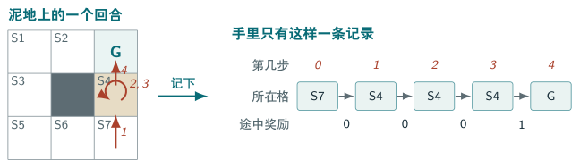
左边是泥地上的一个回合：从 S7 向上进入泥地 S4，在 S4 打滑两次，第 4 次移动进入终点 G；红色斜体数字是第几次移动。右边是这条记录本身：第 0 到第 4 步所在的格为 S7、S4、S4、S4、G，途中奖励为 0、0、0、1。没有转移概率，学习器可用的只有这样的记录。
这样一条记录有两种用法。第一种等到回合结束，算出 S7 之后的回报 . 729 .729 .729 0 0 0 0 + . 9 V ( S 4 ) 0+.9\,V(\mathrm{S4}) 0 + .9 V ( S4 )
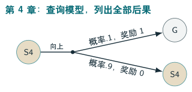
第 4 章能用的信息：在 S4 向上，模型给出两条带概率的边，一步期望可以直接加权求出。
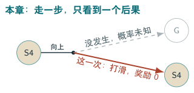
本章能用的信息：同样在 S4 向上，只有实际发生的一条边（红色，这一次打滑），另一条边没有发生，概率未知。
价值的定义与第 3 章的 Bellman 方程都还成立。可以利用的是重复：S4 被访问的次数多了，打滑所占的比例会接近 . 9 .9 .9 . 9 .9 .9 . 59 .59 .59 9 / 19 ≈ . 474 9/19\approx.474 9/19 ≈ .474 . 35 .35 .35 . 5 .5 .5 1 1 1 . 9 × . 5 .9\times.5 .9 × .5 . 505 .505 .505 10 / 19 ≈ . 526 10/19\approx.526 10/19 ≈ .526 . 021 .021 .021
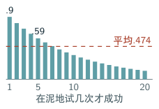
从 S7 出发、在泥地第 n n n . 9 n .9^n . 9 n n = 1 , … , 20 n=1,\ldots,20 n = 1 , … , 20 . 1 × . 9 n − 1 .1\times.9^{n-1} .1 × . 9 n − 1 . 474 .474 .474
蒙特卡洛（Monte Carlo，MC）对付前两个难处的办法是等到回合终止，用实际得到的完整回报取平均。时序差分（temporal difference，TD）只等一步，用当前的后继价值估计补足尚未观察的回报，代价是第三个难处。读本章时可以始终盯住时刻 t = 1 t=1 t = 1 投影片上的同一访问
给定有限 MDP，转移与奖励分布 p p p 0 ≤ γ ≤ 1 0\le\gamma\le1 0 ≤ γ ≤ 1 γ = 1 \gamma=1 γ = 1 π \pi π π \pi π S 0 , A 0 , R 1 , S 1 , … S_0,A_0,R_1,S_1,\ldots S 0 , A 0 , R 1 , S 1 , … π \pi π v π ( s ) = E π [ G t ∣ S t = s ] v_\pi(s)=\mathbb E_\pi[G_t\mid S_t=s] v π ( s ) = E π [ G t ∣ S t = s ] p p p q V ( s , a ) = ∑ s ′ , r p ( s ′ , r ∣ s , a ) [ r + γ V ( s ′ ) ] q_V(s,a)=\sum_{s',r}p(s',r\mid s,a)[r+\gamma V(s')] q V ( s , a ) = ∑ s ′ , r p ( s ′ , r ∣ s , a ) [ r + γV ( s ′ )] 数据由谁产生：被评价的 π \pi π 本章始终保留这一条，第 6 章放开它。
本章的底层问题是：不知道 p p p
V ( S t ) ← V ( S t ) + α [ Y t − V ( S t ) ] , V(S_t)\gets V(S_t)+\alpha\,[\,Y_t-V(S_t)\,], V ( S t ) ← V ( S t ) + α [ Y t − V ( S t ) ] ,
区别只在样本目标 Y t Y_t Y t π \pi π p p p Y t = R t + 1 + γ V ( S t + 1 ) Y_t=R_{t+1}+\gamma V(S_{t+1}) Y t = R t + 1 + γV ( S t + 1 ) Y t = G t Y_t=G_t Y t = G t
本章各节排成一条链：每一节的方法解决上一节留下的困难，又留下新的困难。下图沿箭头读，蓝框是一节的方法，框下红字是它留下的困难；表格给出同一条链的式子。
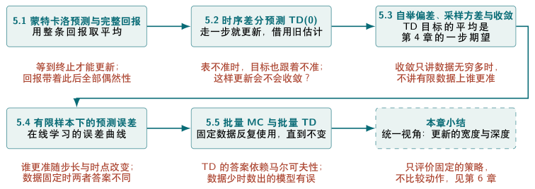
本章的痛点链。从左上的 5.1 读起，到 5.3 折回下一行，最后一格指向第 6 章：只评价固定的策略，还不比较动作。
节
方法
解决的困难
留下的困难
5.1
蒙特卡洛预测，Y t = G t Y_t=G_t Y t = G t
不用 p p p v π v_\pi v π
等到终止才能更新；目标含此后全部随机性
5.2
TD(0)，Y t = R t + 1 + γ V ( S t + 1 ) Y_t=R_{t+1}+\gamma V(S_{t+1}) Y t = R t + 1 + γV ( S t + 1 )
每步即可更新，适用于持续任务
目标读估计 V V V v π v_\pi v π
5.3
自举偏差、采样方差与收敛
算出两种目标的偏差与方差；E [ δ t ∣ F t ] \mathbb E[\delta_t\mid\mathcal F_t] E [ δ t ∣ F t ]
收敛定理只讲极限，不讲有限数据上谁更准
5.4
有限样本下的预测误差
在相同轨迹上比较价值误差
步长会改变排序；每条经验只用一次
5.5
批量 MC 与批量 TD
刻画固定数据上的两个解：回报均值与确定性等价
TD 共享后继依赖马尔可夫性；数据少时经验模型有误
小结
DP、MC 与 TD 的统一视角
不处理新困难；用采样与自举两条轴放下三种方法
只评价固定的 π \pi π
5.1 蒙特卡洛预测与完整回报课件
蒙特卡洛预测的定义
设任务是回合式的：每个回合以概率 1 1 1 T T T i = 1 , … , K i=1,\ldots,K i = 1 , … , K π \pi π t t t G t = R t + 1 + γ R t + 2 + ⋯ + γ T − t − 1 R T G_t=R_{t+1}+\gamma R_{t+2}+\cdots+\gamma^{T-t-1}R_T G t = R t + 1 + γ R t + 2 + ⋯ + γ T − t − 1 R T t < T t<T t < T S t = s S_t=s S t = s t t t 访问 s s s 蒙特卡洛预测 取 V ( s ) V(s) V ( s ) s s s s s s π \pi π E π [ G t ∣ S t = s ] = v π ( s ) \mathbb E_\pi[G_t\mid S_t=s]=v_\pi(s) E π [ G t ∣ S t = s ] = v π ( s ) s s s 1 1 1 v π ( s ) v_\pi(s) v π ( s )
泥地导航的固定策略预测
沿用第 3 章的泥地和第 4 章评价过的固定策略 π 0 \pi_0 π 0 G G G γ = 0.9 \gamma=0.9 γ = 0.9
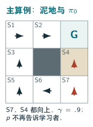
泥地的地图。深色一格是墙，G 是终点，阴影格 S4 是泥地；每格的箭头是固定策略 π 0 \pi_0 π 0 γ = . 9 \gamma=.9 γ = .9 p p p
网格上的箭头表示给定的行动。价值估计随经验改变，策略保持固定。下面的转移图着色的是这次观测到的边；后面的模型概率用于分析这些更新的均值。
沿同一策略采得的一回合。时刻一到达泥地，自环走了两次，最后一条边产生奖励一。
一个完整回合为
S 0 , A 0 , R 1 , S 1 , … , R T , S T . S_0,A_0,R_1,S_1,\ldots,R_T,S_T. S 0 , A 0 , R 1 , S 1 , … , R T , S T .
其中 T T T 定义 对非终止时刻 t t t
G t = ∑ k = t T − 1 γ k − t R k + 1 . (5.1) G_t=\sum_{k=t}^{T-1}\gamma^{k-t}R_{k+1}.
\tag{5.1} G t = k = t ∑ T − 1 γ k − t R k + 1 . ( 5.1 )
一个回合含四次转移，其中三次落在同一块泥地。下图是一条可能出现的四步轨迹，三个 S 4 \mathrm{S4} S4 S 1 = S 4 S_1=\mathrm{S4} S 1 = S4 S 1 = S 2 = S 3 = S 4 S_1=S_2=S_3=\mathrm{S4} S 1 = S 2 = S 3 = S4
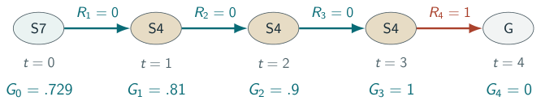
泥地上的一条四步轨迹。椭圆从左到右是 t = 0 t=0 t = 0 t = 4 t=4 t = 4 G 0 = . 729 G_0=.729 G 0 = .729 G 1 = . 81 G_1=.81 G 1 = .81 G 2 = . 9 G_2=.9 G 2 = .9 G 3 = 1 G_3=1 G 3 = 1 G 4 = 0 G_4=0 G 4 = 0
回合结束后，各次访问的回报从终止处逆序算出。逐项按式 (5.1) 求和也能得到它们，递推关系 G t = R t + 1 + γ G t + 1 G_t=R_{t+1}+\gamma G_{t+1} G t = R t + 1 + γ G t + 1
G 4 = 0 , G 3 = 1 + . 9 G 4 = 1 , G 2 = 0 + . 9 G 3 = . 9 , G 1 = 0 + . 9 G 2 = . 81 , G 0 = 0 + . 9 G 1 = . 729. \begin{aligned}
G_4&=0,\\
G_3&=1+.9G_4=1,\\
G_2&=0+.9G_3=.9,\\
G_1&=0+.9G_2=.81,\\
G_0&=0+.9G_1=.729.
\end{aligned} G 4 G 3 G 2 G 1 G 0 = 0 , = 1 + .9 G 4 = 1 , = 0 + .9 G 3 = .9 , = 0 + .9 G 2 = .81 , = 0 + .9 G 1 = .729.
奖励按正向时间产生；完整回合保存下来以后，回报可以逆序计算。这个计算顺序不改变哪一次访问发生得最早。
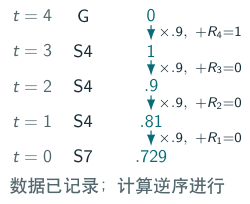
从右往左读：最后一步进入终点得奖励 1 1 1 . 9 .9 .9 1 1 1 . 9 .9 .9 . 81 .81 .81 . 729 .729 .729
时刻一和时刻二处在同一格，回报仍然不同（. 81 .81 .81 与 . 9 .9 .9
首次访问与每次访问
上面这一回合三次经过 S 4 \mathrm{S4} S4 S 4 \mathrm{S4} S4
首次访问 MC ：每个回合、每个状态，只纳入时间上第一次访问之后的回报。本例对 S 4 \mathrm{S4} S4 . 81 .81 .81 每次访问 MC ：每次访问之后的回报都纳入。本例对 S 4 \mathrm{S4} S4 . 81 , . 9 , 1 .81,.9,1 .81 , .9 , 1
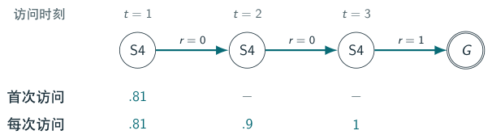
同一回合在 t = 1 , 2 , 3 t=1,2,3 t = 1 , 2 , 3 t = 1 t=1 t = 1 . 81 .81 .81 . 81 .81 .81 . 9 .9 .9 1 1 1
两种方法估计同一个 v π v_\pi v π
两种估计量 记第 i i i s s s T i ( s ) \mathcal T_i(s) T i ( s ) N i ( s ) = ∣ T i ( s ) ∣ N_i(s)=|\mathcal T_i(s)| N i ( s ) = ∣ T i ( s ) ∣ τ i ( s ) = min T i ( s ) \tau_i(s)=\min\mathcal T_i(s) τ i ( s ) = min T i ( s ) I = { i : N i ( s ) > 0 } \mathcal I=\{i:N_i(s)>0\} I = { i : N i ( s ) > 0 }
V ^ K F ( s ) = 1 ∣ I ∣ ∑ i ∈ I G τ i ( s ) ( i ) , V ^ K E ( s ) = ∑ i = 1 K ∑ t ∈ T i ( s ) G t ( i ) ∑ i = 1 K N i ( s ) . \hat V^{\mathrm F}_K(s)=\frac{1}{|\mathcal I|}\sum_{i\in\mathcal I}G^{(i)}_{\tau_i(s)},\qquad \hat V^{\mathrm E}_K(s)=\frac{\sum_{i=1}^K\sum_{t\in\mathcal T_i(s)}G^{(i)}_t}{\sum_{i=1}^K N_i(s)}. V ^ K F ( s ) = ∣ I ∣ 1 i ∈ I ∑ G τ i ( s ) ( i ) , V ^ K E ( s ) = ∑ i = 1 K N i ( s ) ∑ i = 1 K ∑ t ∈ T i ( s ) G t ( i ) .
区分的原因 同一回合内两次访问 t < t ′ t<t' t < t ′ G t = R t + 1 + ⋯ + γ t ′ − t − 1 R t ′ + γ t ′ − t G t ′ G_t=R_{t+1}+\cdots+\gamma^{t'-t-1}R_{t'}+\gamma^{t'-t}G_{t'} G t = R t + 1 + ⋯ + γ t ′ − t − 1 R t ′ + γ t ′ − t G t ′ t ′ t' t ′ 1 1 1 0.1 0.1 0.1 v π ( s ) = 10 v_\pi(s)=10 v π ( s ) = 10 4 , 3 , 2 , 1 4,3,2,1 4 , 3 , 2 , 1 4 4 4 2.5 2.5 2.5 42.75 42.75 42.75 90 90 90 5 5 5 1.9 1.9 1.9 181 / 190 ≈ . 953 181/190\approx.953 181/190 ≈ .953
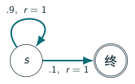
自环例子的状态图。在 s s s 1 1 1 . 9 .9 .9 . 1 .1 .1 v π ( s ) = 10 v_\pi(s)=10 v π ( s ) = 10 s s s
这个自环可以精确算出。首访回报 M M M s s s 10 10 10 90 90 90 ( M + 1 ) / 2 (M+1)/2 ( M + 1 ) /2 5.5 5.5 5.5 − 4.5 -4.5 − 4.5 22.5 22.5 22.5 4. 5 2 + 22.5 = 42.75 4.5^2+22.5=42.75 4. 5 2 + 22.5 = 42.75 90 90 90 171 / 90 = 1.9 171/90=1.9 171/90 = 1.9 C i C_i C i i i i
首访
每次访问
每回合计入
1 1 1 N i ( s ) N_i(s) N i ( s )
有限 K K K
回合独立时 = v π ( s ) =v_\pi(s) = v π ( s )
随机分母的比值，一般 ≠ v π ( s ) \ne v_\pi(s) = v π ( s ) K K K
K → ∞ K\to\infty K → ∞ → v π ( s ) \to v_\pi(s) → v π ( s ) → E C i / E N i = v π ( s ) \to\mathbb EC_i/\mathbb EN_i=v_\pi(s) → E C i / E N i = v π ( s )
均方误差（无折扣）
短期大、长期小
短期小、长期大
不同意见 长期首访更准这一结论只在无折扣情形证明过，上面泥地的比值极限 181 / 190 181/190 181/190 K = 100 K=100 K = 100 . 962 .962 .962
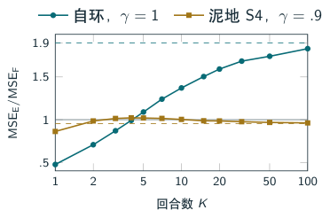
两种 MC 的均方误差之比 M S E E / M S E F \mathrm{MSE_E}/\mathrm{MSE_F} MS E E / MS E F K K K （γ = 1 \gamma=1 γ = 1 从一回合的 . 475 .475 .475 1.9 1.9 1.9 （γ = . 9 \gamma=.9 γ = .9 始终贴近 1，极限 181 / 190 ≈ . 95 181/190\approx.95 181/190 ≈ .95
两条曲线都在回合长度的几何分布上精确算出，不是模拟。虚线的极限来自比值估计的一阶展开（delta 方法）：分子、分母各自用中心极限定理，得 K M S E E → V a r ( C i − v π N i ) / ( E N i ) 2 K\,\mathrm{MSE_E}\to\mathrm{Var}(C_i-v_\pi N_i)/(\mathbb EN_i)^2 K MS E E → Var ( C i − v π N i ) / ( E N i ) 2 1 / K 1/K 1/ K . 475 .475 .475 1 1 1 . 862 .862 .862 3 3 3 10 10 10 1 1 1 1.022 1.022 1.022 1 1 1
不同意见 这只是两个单状态例子。多状态问题中，两种估计的差别还取决于各状态被重复访问的程度。Singh 与 Sutton 的定理只覆盖无折扣情形，折扣情形的一般结论本课没有找到文献。
后续作用 这一区分在后面三处再次出现。第 7 章 7.3 节：离线、无折扣的 TD(1) 用累积迹时等价于每次访问 MC，用替换迹时等价于首访 MC（Singh 与 Sutton，1996）。第 9 章 9.1 节：梯度 MC 在回合的每一步都更新，价值误差按每回合在 s s s s s s
令 G ( 1 ) ( s ) , … , G ( N ) ( s ) G^{(1)}(s),\ldots,G^{(N)}(s) G ( 1 ) ( s ) , … , G ( N ) ( s ) s s s
V N ( s ) = 1 N ∑ i = 1 N G ( i ) ( s ) . V_N(s)=\frac1N\sum_{i=1}^N G^{(i)}(s). V N ( s ) = N 1 i = 1 ∑ N G ( i ) ( s ) .
首访回报的样本平均可以写成步长为 1 / N 1/N 1/ N N − 1 N-1 N − 1
V N ( s ) = ( N − 1 ) V N − 1 ( s ) + G ( N ) ( s ) N = V N − 1 ( s ) + 1 N ⏟ 新回报的权重 [ G ( N ) ( s ) − V N − 1 ( s ) ] ⏟ 回报与当前预测之差 . (5.2) \begin{aligned}
V_N(s)
&=\frac{(N-1)V_{N-1}(s)+G^{(N)}(s)}N\\
&=V_{N-1}(s)+\underbrace{\frac1N}_{\text{新回报的权重}}
\underbrace{\big[G^{(N)}(s)-V_{N-1}(s)\big]}_{\text{回报与当前预测之差}}.
\end{aligned}\tag{5.2} V N ( s ) = N ( N − 1 ) V N − 1 ( s ) + G ( N ) ( s ) = V N − 1 ( s ) + 新回报的权重 N 1 回报与当前预测之差 [ G ( N ) ( s ) − V N − 1 ( s ) ] . ( 5.2 )
例如，三个独立回合从首次到 S4 起分别经历零次、一次、两次打滑，回报为 1 , . 9 , . 81 1,.9,.81 1 , .9 , .81 V 2 = . 95 V_2=.95 V 2 = .95 . 81 .81 .81 V 3 = . 95 + ( . 81 − . 95 ) / 3 ≈ . 903 V_3=.95+(.81-.95)/3\approx.903 V 3 = .95 + ( .81 − .95 ) /3 ≈ .903 v π ( S 4 ) = 10 / 19 ≈ . 526 v_\pi(\mathrm{S4})=10/19\approx.526 v π ( S4 ) = 10/19 ≈ .526 . 35 .35 .35 . 526 .526 .526 V ( s ) V(s) V ( s ) N ( s ) N(s) N ( s )
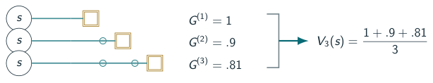
上例的三个独立回合（示意）。每行从首次到 S4 起，空心小圆是一次打滑，方框是终点；三个回报 1 1 1 . 9 .9 .9 . 81 .81 .81 V 3 ( s ) ≈ . 903 V_3(s)\approx.903 V 3 ( s ) ≈ .903
固定策略、独立回合下，从状态首次访问之后得到的回报具有所需的条件分布。若用预先确定数量的有效回合，并且回报有有限期望，首次访问样本平均是该状态价值的无偏估计；若回报还有有限方差，样本平均的标准误按 1 / N 1/\sqrt{N} 1/ N
首次访问蒙特卡洛算法
首次访问 MC 先逆序算出回报，再正序挑出首次访问。它的输入是固定策略 π \pi π γ \gamma γ K K K 1 1 1 V ( s ) V(s) V ( s ) N ( s ) N(s) N ( s )
算法分两遍扫同一个回合。对章首那个回合，第一遍从终点向前，回报从 0 0 0 . 9 .9 .9 1 1 1 . 9 .9 .9 . 81 .81 .81 . 729 .729 .729 . 81 .81 .81 V V V N = 1 N=1 N = 1
下面的实现中，discounted_returns 从末尾计算所有 G t G_t G t mc_first_visit 再按正向时间筛选首次访问：
= discounted_returns(records, gamma)= set ()for (state, _, _, _), g in zip (records, returns):if state not in seen:+= 1 += (g - values[state]) / counts[state]records 必须是已经真正终止的完整回合。若这是第一个回合，N ( S 7 ) = N ( S 4 ) = 1 N(\mathrm{S7})=N(\mathrm{S4})=1 N ( S7 ) = N ( S4 ) = 1 V ( S 7 ) = . 729 , V ( S 4 ) = . 81 V(\mathrm{S7})=.729,V(\mathrm{S4})=.81 V ( S7 ) = .729 , V ( S4 ) = .81
选读：每次访问的偏差与一致性
泥地 S4 上，单回合的每次访问估计期望为 . 713 .713 .713 10 / 19 ≈ . 526 10/19\approx.526 10/19 ≈ .526 10 / 19 10/19 10/19 M i ≥ 1 M_i\ge1 M i ≥ 1 i i i Pr ( M i = m ) = . 1 × . 9 m − 1 \Pr(M_i=m)=.1\times.9^{m-1} Pr ( M i = m ) = .1 × . 9 m − 1 1 , . 9 , … , . 9 M i − 1 1,.9,\ldots,.9^{M_i-1} 1 , .9 , … , . 9 M i − 1 C i = ∑ j = 0 M i − 1 . 9 j C_i=\sum_{j=0}^{M_i-1}.9^j C i = ∑ j = 0 M i − 1 . 9 j v ^ K = ∑ i ≤ K C i / ∑ i ≤ K M i \widehat v_K=\sum_{i\le K}C_i\big/\sum_{i\le K}M_i v K = ∑ i ≤ K C i / ∑ i ≤ K M i
有限回合：有偏 取 K = 1 K=1 K = 1 v ^ 1 = ( 1 − . 9 M ) / ( . 1 M ) \widehat v_1=(1-.9^{M})/(.1M) v 1 = ( 1 − . 9 M ) / ( .1 M ) M M M
E v ^ 1 = ∑ m ≥ 1 . 9 m − 1 − . 8 1 m / . 9 m = ln 1.9 . 9 ≈ . 713. \mathbb E\widehat v_1=\sum_{m\ge1}\frac{.9^{m-1}-.81^{m}/.9}{m}=\frac{\ln1.9}{.9}\approx.713 . E v 1 = m ≥ 1 ∑ m . 9 m − 1 − .8 1 m /.9 = .9 ln 1.9 ≈ .713.
M M M
回合无穷：一致
v ^ K = ∑ i = 1 K C i ∑ i = 1 K M i = K − 1 ∑ i C i K − 1 ∑ i M i ① 分子分母同除以 K ⟶ E C i E M i ② 对分子、分母分别用独立回合的大数定律 = 100 / 19 10 = 10 19 ③ Pr ( M i > j ) = . 9 j ，几何级数求和 \begin{aligned}
\widehat v_K=\frac{\sum_{i=1}^KC_i}{\sum_{i=1}^KM_i}
&=\frac{K^{-1}\sum_iC_i}{K^{-1}\sum_iM_i}
&&\text{① 分子分母同除以 }K\\
&\longrightarrow\frac{\mathbb EC_i}{\mathbb EM_i}
&&\text{② 对分子、分母分别用独立回合的大数定律}\\
&=\frac{100/19}{10}=\frac{10}{19}
&&\text{③ }\Pr(M_i>j)=.9^j\text{，几何级数求和}
\end{aligned} v K = ∑ i = 1 K M i ∑ i = 1 K C i = K − 1 ∑ i M i K − 1 ∑ i C i ⟶ E M i E C i = 10 100/19 = 19 10 ① 分子分母同除以 K ② 对分子、分母分别用独立回合的大数定律 ③ Pr ( M i > j ) = . 9 j ，几何级数求和
第③步中
E M i = ∑ j ≥ 0 . 9 j = 10 , E C i = ∑ j ≥ 0 . 9 j Pr ( M i > j ) = ∑ j ≥ 0 . 8 1 j = 100 19 . \mathbb EM_i=\sum_{j\ge0}.9^j=10,\qquad
\mathbb EC_i=\sum_{j\ge0}.9^j\Pr(M_i>j)
=\sum_{j\ge0}.81^j=\frac{100}{19}. E M i = j ≥ 0 ∑ . 9 j = 10 , E C i = j ≥ 0 ∑ . 9 j Pr ( M i > j ) = j ≥ 0 ∑ .8 1 j = 19 100 .
极限等于 v π ( S 4 ) v_\pi(\mathrm{S4}) v π ( S4 )
5.2 时序差分预测 TD(0)课件
一步转移与后继价值
不等回合结束，一步奖励加后继估计已经给出一个目标。假设当前表中 V ( S 7 ) = . 4 , V ( S 4 ) = . 5 V(\mathrm{S7})=.4,V(\mathrm{S4})=.5 V ( S7 ) = .4 , V ( S4 ) = .5 S 7 → S 4 \mathrm{S7}\to \mathrm{S4} S7 → S4 V ( S 4 ) V(\mathrm{S4}) V ( S4 ) . 9 × . 5 = . 45 .9\times.5=.45 .9 × .5 = .45 t = 4 t=4 t = 4 . 1 .1 .1 10 10 10 11 11 11
开车回家 Sutton 与 Barto 的例 6.1 用日常经验说明走一步就修正。每天沿同一路线回家，每到一个路段就重新估计还要多久。下图纵轴画已用时间加预计剩余时间，即预计全程，各时刻因此可以比较。在高速出口，已用 20 20 20 35 35 35 43 43 43 43 43 43 40 40 40 40 40 40 20 20 20 23 23 23 20 20 20
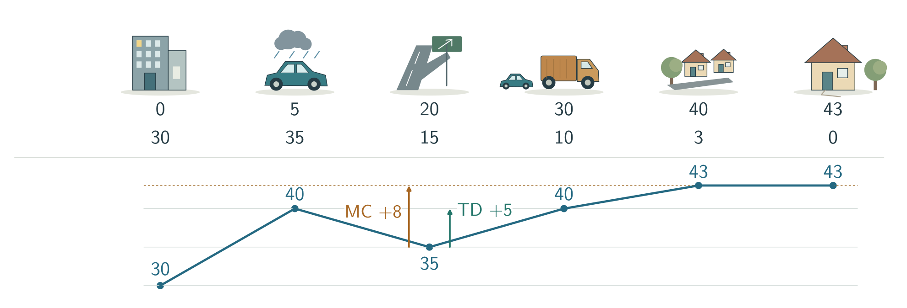
横向是六个情境：离开办公室、上车时下雨、驶出高速、遇慢车、进入自家街道、抵达家中；等距排开，两个情境之间经过的时间并不相同。纵轴是已用时间加预计剩余时间，依次为 30 30 30 40 40 40 35 35 35 40 40 40 43 43 43 43 43 43 43 43 43 + 8 +8 + 8 40 40 40 + 5 +5 + 5
回到泥地：从 S7 出发，这条记录的 MC 目标是 . 729 .729 .729 . 45 .45 .45 9 / 19 9/19 9/19 V ( S 4 ) = . 5 V(\mathrm{S4})=.5 V ( S4 ) = .5 . 024 .024 .024
这个目标的依据是：价值等于一步奖励加后继价值的期望。由价值定义、回报递推与条件期望，
v π ( s ) = E π [ G t ∣ S t = s ] ① 价值的定义 = E π [ R t + 1 + γ G t + 1 ∣ S t = s ] ② 回报的递推关系 = E π [ R t + 1 + γ v π ( S t + 1 ) ∣ S t = s ] . ③ 全期望公式与马尔可夫性质 (5.3) \begin{aligned}
v_\pi(s)
&=\mathbb E_\pi[G_t\mid S_t=s]
&&\text{① 价值的定义}\\
&=\mathbb E_\pi[R_{t+1}+\gamma G_{t+1}\mid S_t=s]
&&\text{② 回报的递推关系}\\
&=\mathbb E_\pi[R_{t+1}+\gamma v_\pi(S_{t+1})\mid S_t=s].
&&\text{③ 全期望公式与马尔可夫性质}
\end{aligned}\tag{5.3} v π ( s ) = E π [ G t ∣ S t = s ] = E π [ R t + 1 + γ G t + 1 ∣ S t = s ] = E π [ R t + 1 + γ v π ( S t + 1 ) ∣ S t = s ] . ① 价值的定义 ② 回报的递推关系 ③ 全期望公式与马尔可夫性质 ( 5.3 )
第③步先对完整的一步 ( A t , R t + 1 , S t + 1 ) (A_t,R_{t+1},S_{t+1}) ( A t , R t + 1 , S t + 1 ) π \pi π v π ( S t + 1 ) v_\pi(S_{t+1}) v π ( S t + 1 ) 恒等式 。右边就是第 4 章 4.1 节的一步期望按策略平均的结果：( T π v π ) ( s ) = ∑ a π ( a ∣ s ) q v π ( s , a ) (T_\pi v_\pi)(s)=\sum_a\pi(a\mid s)\,q_{v_\pi}(s,a) ( T π v π ) ( s ) = ∑ a π ( a ∣ s ) q v π ( s , a )
TD 目标对式 (5.3) 作两次替换：抽一个样本，读一个估计。 算法既不知道 p p p v π v_\pi v π
Y t ⏟ 新目标 = R t + 1 ⏟ 实际奖励 + γ V t ( S t + 1 ) ⏟ 当前后继价值估计 . (5.4) \underbrace{Y_t}_{\text{新目标}}
=\underbrace{R_{t+1}}_{\text{实际奖励}}
+\gamma\underbrace{V_t(S_{t+1})}_{\text{当前后继价值估计}}.
\tag{5.4} 新目标 Y t = 实际奖励 R t + 1 + γ 当前后继价值估计 V t ( S t + 1 ) . ( 5.4 )
下图把这两步画在一起（投影片上的同一页 ）。
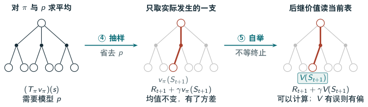
三格回退图，从左往右读。每格顶上的空心圆是当前状态 s s s π \pi π p p p v π ( S t + 1 ) v_\pi(S_{t+1}) v π ( S t + 1 ) V ( S t + 1 ) V(S_{t+1}) V ( S t + 1 )
两次替换各自引入一种误差：
④ 抽样 ：( A t , R t + 1 , S t + 1 ) (A_t,R_{t+1},S_{t+1}) ( A t , R t + 1 , S t + 1 ) π \pi π p p p
⑤ 自举 ：用当前估计 V t ( S t + 1 ) V_t(S_{t+1}) V t ( S t + 1 ) v π ( S t + 1 ) v_\pi(S_{t+1}) v π ( S t + 1 ) 自举 。这一步不必等待后续奖励，代价是 V t V_t V t v π ( S t ) v_\pi(S_t) v π ( S t )
MC 只作④，并把抽样延续到终止，不作⑤。式 (5.4) 是一个估计量 ：给定当前表，它是 ( T π V t ) ( S t ) (T_\pi V_t)(S_t) ( T π V t ) ( S t ) v π ( S t ) v_\pi(S_t) v π ( S t )
把 TD 目标当作 v π ( S t ) v_\pi(S_t) v π ( S t ) ( T π V t ) ( S t ) (T_\pi V_t)(S_t) ( T π V t ) ( S t ) v π ( S t ) v_\pi(S_t) v π ( S t ) γ E π [ V t ( S t + 1 ) − v π ( S t + 1 ) ∣ S t ] \gamma\,\mathbb E_\pi[V_t(S_{t+1})-v_\pi(S_{t+1})\mid S_t] γ E π [ V t ( S t + 1 ) − v π ( S t + 1 ) ∣ S t ] G t G_t G t v π ( S t ) v_\pi(S_t) v π ( S t )
同一次访问，三种方法的目标不同：. 505 .505 .505 . 45 .45 .45 . 81 .81 .81 V ( S 4 ) = . 5 V(\mathrm{S4})=.5 V ( S4 ) = .5 . 2 .2 .2
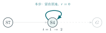
一次打滑所提供的信息。第 2 步只观测到奖励零和相同的后继状态。
计算
从哪里取得后果
用于更新 V ( S 4 ) V(\mathrm{S4}) V ( S4 )
写入后的 V ( S 4 ) V(\mathrm{S4}) V ( S4 )
动态规划
模型给出两种后果的概率
( T π 0 V ) ( S 4 ) = . 9 [ 0 + . 9 ( . 5 ) ] + . 1 [ 1 + . 9 ( 0 ) ] = . 505 (T_{\pi_0}V)(\mathrm{S4})=.9[0+.9(.5)]+.1[1+.9(0)]=.505 ( T π 0 V ) ( S4 ) = .9 [ 0 + .9 ( .5 )] + .1 [ 1 + .9 ( 0 )] = .505 步长 . 2 .2 .2 . 501 .501 .501 1 1 1 . 505 .505 .505
TD(0)
这次打滑，续值读旧表
Y 1 = 0 + . 9 ( . 5 ) = . 45 Y_1=0+.9(.5)=.45 Y 1 = 0 + .9 ( .5 ) = .45 . 49 .49 .49
首访 MC
直到终止实际得到 0 , 0 , 1 0,0,1 0 , 0 , 1
G 1 = 0 + . 9 ( 0 ) + . 9 2 ( 1 ) = . 81 G_1=0+.9(0)+.9^2(1)=.81 G 1 = 0 + .9 ( 0 ) + . 9 2 ( 1 ) = .81 . 562 .562 .562
同步 DP 直接把 . 505 .505 .505 . 2 .2 .2 . 5 + . 2 × . 005 = . 501 .5+.2\times.005=.501 .5 + .2 × .005 = .501 . 2 .2 .2 . 5 + . 2 ( . 45 − . 5 ) = . 49 .5+.2(.45-.5)=.49 .5 + .2 ( .45 − .5 ) = .49 . 5 + . 2 ( . 81 − . 5 ) = . 562 .5+.2(.81-.5)=.562 .5 + .2 ( .81 − .5 ) = .562 1 / N ( s ) 1/N(s) 1/ N ( s ) . 2 .2 .2 三种目标的复算程序
TD 误差与价值更新
定义 新目标与旧预测之差为 TD 误差：
δ t = Y t − V t ( S t ) . (5.5) \delta_t=Y_t-V_t(S_t).
\tag{5.5} δ t = Y t − V t ( S t ) . ( 5.5 )
更新 TD(0) 只更新当前访问的表项：
V t + 1 ( S t ) = V t ( S t ) + α t δ t , (5.6) V_{t+1}(S_t)=V_t(S_t)+\alpha_t\delta_t,
\tag{5.6} V t + 1 ( S t ) = V t ( S t ) + α t δ t , ( 5.6 )
其余表项保持原值。沿前述第一步转移，令 α = . 2 \alpha=.2 α = .2
Y 0 = 0 + . 9 × . 5 = . 45 , δ 0 = . 45 − . 4 = . 05 , V 1 ( S 7 ) = . 4 + . 2 × . 05 = . 41. \begin{aligned}
Y_0&=0+.9\times.5=.45,\\
\delta_0&=.45-.4=.05,\\
V_1(\mathrm{S7})&=.4+.2\times.05=.41.
\end{aligned} Y 0 δ 0 V 1 ( S7 ) = 0 + .9 × .5 = .45 , = .45 − .4 = .05 , = .4 + .2 × .05 = .41.
δ t \delta_t δ t v π ( S t ) − V t ( S t ) v_\pi(S_t)-V_t(S_t) v π ( S t ) − V t ( S t ) δ t \delta_t δ t ( T π V t ) ( S t ) − V t ( S t ) (T_\pi V_t)(S_t)-V_t(S_t) ( T π V t ) ( S t ) − V t ( S t )
TD(0) 每走一步，先读两项旧值，再写回出发状态。它的输入是固定策略 π \pi π γ \gamma γ 0 < α ≤ 1 0<\alpha\le1 0 < α ≤ 1 B B B π \pi π
对应代码中的计算顺序如下：
= values[state] # 先读当前表 = 0.0 if done else values[nxt] # 真正终止才取零尾值 = reward + gamma * tail= target - current= current + alpha * delta
自环 S t + 1 = S t S_{t+1}=S_t S t + 1 = S t V ( S t + 1 ) V(S_{t+1}) V ( S t + 1 )
沿同一条四步轨迹继续更新，得到：
实际转移
当前状态的旧值
一步目标 Y t Y_t Y t
δ t \delta_t δ t 更新值
S 7 → S 4 \mathrm{S7}\to \mathrm{S4} S7 → S4 .4
.45
.05
.41
S 4 → S 4 \mathrm{S4}\to \mathrm{S4} S4 → S4 .5
.45
−.05
.49
S 4 → S 4 \mathrm{S4}\to \mathrm{S4} S4 → S4 .49
.441
−.049
.4802
S 4 → G \mathrm{S4}\to G S4 → G .4802
1
.5198
.58416
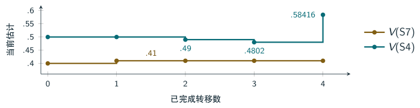
横轴是已完成的转移数，纵轴是表值；金色阶梯是 V ( S 7 ) V(\mathrm{S7}) V ( S7 ) V ( S 4 ) V(\mathrm{S4}) V ( S4 ) . 4 → . 41 .4\to.41 .4 → .41 . 49 .49 .49 . 4802 .4802 .4802 . 58416 .58416 .58416
第三次转移使用的后继估计已经是 . 49 .49 .49 G G G . 81 .81 .81
选读：重算四步轨迹
上面的表用步长 . 2 .2 .2 . 5 .5 .5 ( . 4 , . 5 ) (.4,.5) ( .4 , .5 ) Y t Y_t Y t δ t \delta_t δ t V ( S 7 ) = . 425 V(\mathrm{S7})=.425 V ( S7 ) = .425 V ( S 4 ) = . 725625 V(\mathrm{S4})=.725625 V ( S4 ) = .725625
转移
Y t Y_t Y t δ t \delta_t δ t 新值
S 7 → S 4 \mathrm{S7}\to\mathrm{S4} S7 → S4 . 45 .45 .45 . 05 .05 .05 V ( S 7 ) = . 425 V(\mathrm{S7})=.425 V ( S7 ) = .425
S 4 → S 4 \mathrm{S4}\to\mathrm{S4} S4 → S4 . 45 .45 .45 − . 05 -.05 − .05 V ( S 4 ) = . 475 V(\mathrm{S4})=.475 V ( S4 ) = .475
S 4 → S 4 \mathrm{S4}\to\mathrm{S4} S4 → S4 . 4275 .4275 .4275 − . 0475 -.0475 − .0475 V ( S 4 ) = . 45125 V(\mathrm{S4})=.45125 V ( S4 ) = .45125
S 4 → G \mathrm{S4}\to G S4 → G 1 1 1 . 54875 .54875 .54875 V ( S 4 ) = . 725625 V(\mathrm{S4})=.725625 V ( S4 ) = .725625
先在纸上重算两次打滑，尤其检查第二次打滑读到的是刚写的 . 475 .475 .475 . 2 .2 .2
终止与截断课件
记录相同：任务到期，尾值取 0 0 0 V V V 0 0 0 S 7 → 0 S 4 → 0 S 4 \mathrm{S7}\xrightarrow{0}\mathrm{S4}\xrightarrow{0}\mathrm{S4} S7 0 S4 0 S4 0 0 0 R 2 + 0 = 0 R_2+0=0 R 2 + 0 = 0 v π , 0 ( S 4 ) = 0 v_{\pi,0}(\mathrm{S4})=0 v π , 0 ( S4 ) = 0 0 0 0 G G G 0 + . 9 × . 5 = . 45 0+.9\times.5=.45 0 + .9 × .5 = .45 G 0 = R 1 + γ R 2 = 0 G_0=R_1+\gamma R_2=0 G 0 = R 1 + γ R 2 = 0 G G G G 0 = 0 + γ 0 + γ 2 G 2 G_0=0+\gamma\,0+\gamma^2G_2 G 0 = 0 + γ 0 + γ 2 G 2 1 1 1 0.81 0.81 0.81
这段两步记录。箭头上是每步奖励，红色是最后一条转移；右侧虚线表示记录止于此处，后面的 S4 仍是非终止状态。这条转移的 TD 目标尾值读 V ( S 4 ) V(\mathrm{S4}) V ( S4 )
在以抵达 G G G S 7 \mathrm{S7} S7 0 + 0.9 × 0 + 0. 9 2 × 0.5 = 0.405 0+0.9\times0+0.9^2\times0.5=0.405 0 + 0.9 × 0 + 0. 9 2 × 0.5 = 0.405 . 45 .45 .45 V ( S 4 ) V(\mathrm{S4}) V ( S4 ) v π , 0 ( S 4 ) v_{\pi,0}(\mathrm{S4}) v π , 0 ( S4 )
若采集器在两步后把环境重置到 S 7 \mathrm{S7} S7 S 4 \mathrm{S4} S4 G G G G G G 1 1 1 Pardo 等，部分回合末端的自举
还可以看到筛选完整回合带来的偏差。若采集器只保存从 S7 两步内到 G G G . 1 .1 .1 G 0 G_0 G 0 . 9 .9 .9 . 9 .9 .9 9 / 19 9/19 9/19
更新时机与存储课件
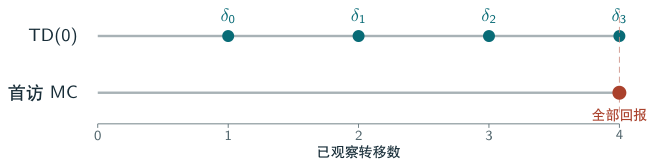
横轴是已观察的转移数。上一行是 TD(0)：第 1 到第 4 次转移之后各有一个 TD 误差 δ 0 , … , δ 3 \delta_0,\ldots,\delta_3 δ 0 , … , δ 3
TD 的前三次写入发生在完整回报出现之前。MC 不使用后继价值估计，但需要等待后续奖励。两者的行为策略都没有改变。
表格 TD 每步只读一条转移就能更新，每步计算量和额外工作空间都是 O ( 1 ) O(1) O ( 1 ) O ( T ) O(T) O ( T ) T T T O ( T ) O(T) O ( T )
背景：TD-Gammon课件
Tesauro（1995）的 TD-Gammon 把一步修正用在双陆棋上，从自对弈中学会评价棋局。它每走一步用下一局面的估计修正当前判断，到终局再用实际胜负修正。双陆棋每轮掷骰后要在几种合法走法中选择，一种走法好不好，取决于它给此后对局带来的胜算。开局掷出 4 与 1 时，传统走法是 13-9、6-5，在前方留下一枚单子；TD-Gammon 偏好 13-9、24-23，向前拆开后排棋子。开局掷出 2-1、4-1 或 5-1 时，此前约 30 年里高手几乎都走 6-5。1992 年发表的 TD-Gammon 推演分析显示，拆开后排的 24-23 更好；此后锦标赛中高手大多改走 24-23，6-5 几乎不再出现。较强的版本还采用人工特征与搜索。
双陆棋的标准开局局面（Tesauro 1995，图 2；图下方是原文英文图注）。正文中两种 4-1 开局走法都从这一局面出发。
5.3 自举偏差、采样方差与收敛课件
TD 目标的均值课件
第 3 章按策略 π 0 \pi_0 π 0 S 4 \mathrm{S4} S4 . 9 .9 .9 . 1 .1 .1
5.2 节在 S4 算出的目标 . 45 .45 .45 . 5 .5 .5 . 5 .5 .5 . 505 .505 .505 . 526 .526 .526 . 021 .021 .021 V ( S 4 ) = . 5 V(\mathrm{S4})=.5 V ( S4 ) = .5 α = . 2 \alpha=.2 α = .2 Y Y Y
后果
概率
TD 目标 Y Y Y
TD 误差 Y − . 5 Y-.5 Y − .5
更新后的 V ( S 4 ) V(\mathrm{S4}) V ( S4 )
停留，奖励 0 0 0
. 9 .9 .9 . 45 .45 .45 − . 05 -.05 − .05 . 49 .49 .49
终止，奖励 1 1 1
. 1 .1 .1 1 1 1 + . 50 +.50 + .50 . 60 .60 .60
给定旧表与当前状态的均值
. 505 .505 .505 + . 005 +.005 + .005 . 501 .501 .501
均值一行的 . 505 .505 .505
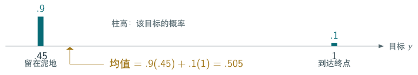
横轴是单次 TD 目标的取值，柱高是该值发生的概率：打滑留在泥地得 . 45 .45 .45 . 9 .9 .9 1 1 1 . 1 .1 .1 . 505 .505 .505 . 45 .45 .45
固定 V V V E π [ Y t ∣ S t = s ] = ( T π V ) ( s ) \mathbb E_\pi[Y_t\mid S_t=s]=(T_\pi V)(s) E π [ Y t ∣ S t = s ] = ( T π V ) ( s ) . 505 − 10 / 19 = . 9 × . 9 × ( . 5 − 10 / 19 ) ≈ − . 0213 .505-10/19=.9\times.9\times(.5-10/19)\approx-.0213 .505 − 10/19 = .9 × .9 × ( .5 − 10/19 ) ≈ − .0213
对同一初始状态，MC 使用实际回报 G t G_t G t 1 1 1 S 4 \mathrm{S4} S4 v π ( S 4 ) v_\pi(\mathrm{S4}) v π ( S4 ) v π ( S 4 ) = . 1 + . 9 × . 9 v π ( S 4 ) v_\pi(\mathrm{S4})=.1+.9\times.9\,v_\pi(\mathrm{S4}) v π ( S4 ) = .1 + .9 × .9 v π ( S4 ) v π ( S 4 ) = 10 / 19 v_\pi(\mathrm{S4})=10/19 v π ( S4 ) = 10/19 . 0263 .0263 .0263 . 5 .5 .5 . 005 .005 .005
偏差与方差课件
后继估计接近真值时，一步目标的方差（. 027 .027 .027 小于完整回报（. 092 .092 .092 均值随后继估计偏移。先看均值。给定 S t = s S_t=s S t = s V V V G t G_t G t v π ( s ) v_\pi(s) v π ( s ) ( T π V ) ( s ) (T_\pi V)(s) ( T π V ) ( s ) 偏差 ：
E [ Y t ∣ S t = s ] − v π ( s ) = γ E π [ V ( S t + 1 ) − v π ( S t + 1 ) ∣ S t = s ] . \mathbb E[Y_t\mid S_t=s]-v_\pi(s)
=\gamma\mathbb E_\pi[V(S_{t+1})-v_\pi(S_{t+1})\mid S_t=s]. E [ Y t ∣ S t = s ] − v π ( s ) = γ E π [ V ( S t + 1 ) − v π ( S t + 1 ) ∣ S t = s ] .
要比较方差，先假设回报有有限二阶矩，并想象已知真实续值。记 Z = ( A t , R t + 1 , S t + 1 ) Z=(A_t,R_{t+1},S_{t+1}) Z = ( A t , R t + 1 , S t + 1 ) Y ∗ = R t + 1 + γ v π ( S t + 1 ) Y^*=R_{t+1}+\gamma v_\pi(S_{t+1}) Y ∗ = R t + 1 + γ v π ( S t + 1 ) S t = s S_t=s S t = s Y ∗ Y^* Y ∗ Z Z Z G t G_t G t
Var ( G t ∣ s ) = Var ( Y ∗ ∣ s ) + E π [ Var ( G t ∣ s , Z ) ∣ s ] . \operatorname{Var}(G_t\mid s)=\operatorname{Var}(Y^*\mid s)+\mathbb E_\pi[\operatorname{Var}(G_t\mid s,Z)\mid s]. Var ( G t ∣ s ) = Var ( Y ∗ ∣ s ) + E π [ Var ( G t ∣ s , Z ) ∣ s ] .
最后一项是知道一步后果以后，余下轨迹仍造成的波动。真续值将这部分平均掉。实际 TD 读取的是一张估计表；换成估计值既可能改变均值，也可能改变方差。在泥地的 S 4 \mathrm{S4} S4 K K K
Pr ( K = k ) = . 1 ( . 9 ) k , G = . 9 K . \Pr(K=k)=.1(.9)^k,\qquad G=.9^K. Pr ( K = k ) = .1 ( .9 ) k , G = . 9 K .
由几何级数，
E [ G ] = . 1 1 − . 9 2 = 10 19 , E [ G 2 ] = . 1 1 − . 9 3 . \mathbb E[G]=\frac{.1}{1-.9^2}=\frac{10}{19},\qquad
\mathbb E[G^2]=\frac{.1}{1-.9^3}. E [ G ] = 1 − . 9 2 .1 = 19 10 , E [ G 2 ] = 1 − . 9 3 .1 .
因此 MC 目标方差约为 . 0919954 .0919954 .0919954 V ( S 4 ) = . 5 V(\mathrm{S4})=.5 V ( S4 ) = .5 . 45 .45 .45 . 505 .505 .505 . 027225 .027225 .027225 . 0920 .0920 .0920 . 0671 .0671 .0671 . 0249 .0249 .0249 10 / 19 10/19 10/19
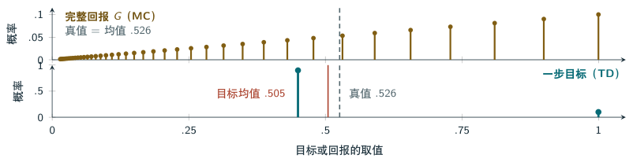
两图都是泥地 S4 上一次目标的精确分布，竖线高度是概率。上图是完整回报 G G G K K K . 9 K .9^K . 9 K . 1 × . 9 K .1\times.9^K .1 × . 9 K 1 1 1 0 0 0 . 526 .526 .526 V ( S 4 ) = . 5 V(\mathrm{S4})=.5 V ( S4 ) = .5 . 45 .45 .45 . 9 .9 .9 1 1 1 . 1 .1 .1 . 505 .505 .505 . 526 .526 .526
上图的回报取值很多，下图只有两个，所以一步目标的方差较小（. 0272 .0272 .0272 对 . 0920 .0920 .0920 3 3 3 2.7 2.7 2.7 1 1 1 . 9 ( . 1 ) ( 2.7 − 1 ) 2 = . 2601 .9(.1)(2.7-1)^2=.2601 .9 ( .1 ) ( 2.7 − 1 ) 2 = .2601
选读：回报误差的分解
上面比较的两种目标，都是拿某个目标减当前估计；两者的联系是：整回合冻结 V V V V V V γ V \gamma V γV γ V \gamma V γV
δ t = R t + 1 + γ V ( S t + 1 ) − V ( S t ) , γ δ t + 1 = γ R t + 2 + γ 2 V ( S t + 2 ) − γ V ( S t + 1 ) . \begin{aligned}
\delta_t&=R_{t+1}+\gamma V(S_{t+1})-V(S_t),\\
\gamma\delta_{t+1}
&=\gamma R_{t+2}+\gamma^2V(S_{t+2})-\gamma V(S_{t+1}).
\end{aligned} δ t γ δ t + 1 = R t + 1 + γV ( S t + 1 ) − V ( S t ) , = γ R t + 2 + γ 2 V ( S t + 2 ) − γV ( S t + 1 ) .
一直加到终止时，得到
G t − V ( S t ) = ∑ k = t T − 1 γ k − t δ k . G_t-V(S_t)=\sum_{k=t}^{T-1}\gamma^{k-t}\delta_k. G t − V ( S t ) = k = t ∑ T − 1 γ k − t δ k .
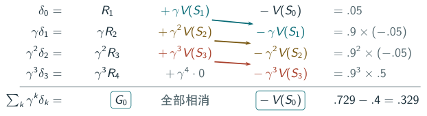
同一四步轨迹冻结 V ( S 7 ) = . 4 V(\mathrm{S7})=.4 V ( S7 ) = .4 V ( S 4 ) = . 5 V(\mathrm{S4})=.5 V ( S4 ) = .5 δ 0 \delta_0 δ 0 γ δ 1 \gamma\delta_1 γ δ 1 γ 2 δ 2 \gamma^2\delta_2 γ 2 δ 2 γ 3 δ 3 \gamma^3\delta_3 γ 3 δ 3 + γ k V ( S k ) +\gamma^{k}V(S_k) + γ k V ( S k ) − γ k V ( S k ) -\gamma^{k}V(S_k) − γ k V ( S k ) . 05 .05 .05 . 9 × ( − . 05 ) .9\times(-.05) .9 × ( − .05 ) . 9 2 × ( − . 05 ) .9^2\times(-.05) . 9 2 × ( − .05 ) . 9 3 × . 5 .9^3\times.5 . 9 3 × .5 G 0 − V ( S 0 ) = . 729 − . 4 = . 329 G_0-V(S_0)=.729-.4=.329 G 0 − V ( S 0 ) = .729 − .4 = .329
这一恒等式说明，完整回报误差可以分解为沿途的一步误差。图中使用整回合相同版本的 V V V δ \delta δ . 729 − . 4 = . 05 + . 9 ( − . 05 ) + . 9 2 ( − . 05 ) + . 9 3 ( . 5 ) = . 329 .729-.4=.05+.9(-.05)+.9^2(-.05)+.9^3(.5)=.329 .729 − .4 = .05 + .9 ( − .05 ) + . 9 2 ( − .05 ) + . 9 3 ( .5 ) = .329
TD(0) 的不动点课件
平均 TD 更新把估计推向 Bellman 方程的解。不动点 （fixed point）指每个状态的条件期望更新都为零的估计。在不动点处，单次样本仍会移动估计，平均移动为零；第 4 章 4.2 节的不动点是同一概念。令 u = V ( S 4 ) u=V(\mathrm{S4}) u = V ( S4 ) . 1 + . 81 u .1+.81u .1 + .81 u
F ( u ) = . 9 ( . 9 u − u ) + . 1 ( 1 − u ) = . 1 − . 19 u . \begin{aligned}
F(u)&=.9(.9u-u)+.1(1-u)\\
&=.1-.19u.
\end{aligned} F ( u ) = .9 ( .9 u − u ) + .1 ( 1 − u ) = .1 − .19 u .
其零点是 u ∗ = 10 / 19 u^*=10/19 u ∗ = 10/19 u = . 1 + . 81 u u=.1+.81u u = .1 + .81 u δ = 1 − 10 / 19 = 9 / 19 \delta=1-10/19=9/19 δ = 1 − 10/19 = 9/19 δ = . 9 × 10 / 19 − 10 / 19 = − 1 / 19 \delta=.9\times10/19-10/19=-1/19 δ = .9 × 10/19 − 10/19 = − 1/19 . 1 .1 .1 . 9 .9 .9
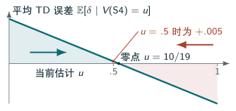
横轴是当前估计 u = V ( S 4 ) u=V(\mathrm{S4}) u = V ( S4 ) . 1 − . 19 u .1-.19u .1 − .19 u u = . 5 u=.5 u = .5 + . 005 +.005 + .005 u u u u u u u = 10 / 19 u=10/19 u = 10/19
已知模型时，可以按平均修正 u + = u + α F ( u ) u^+=u+\alpha F(u) u + = u + α F ( u ) δ \delta δ F ( u ) F(u) F ( u ) u + = u + α δ u^+=u+\alpha\delta u + = u + α δ
把一个状态的平均 TD 误差为零读成全表已经估准。多状态问题中平均误差是向量 T π V − V T_\pi V-V T π V − V V = v π V=v_\pi V = v π
步长同时影响修正幅度与噪声。给定旧表，一次新值的条件方差是 α 2 Var ( δ ) \alpha^2\operatorname{Var}(\delta) α 2 Var ( δ ) u = . 5 u=.5 u = .5 α = 1 \alpha=1 α = 1 . 45 .45 .45 α = . 2 \alpha=.2 α = .2 . 49 .49 .49 . 6 .6 .6
一般表格问题的条件平均
令 F t \mathcal F_t F t S t S_t S t A t A_t A t V t V_t V t
( T π V ) ( s ) = ∑ a π ( a ∣ s ) ∑ s ′ , r p ( s ′ , r ∣ s , a ) [ r + γ V ( s ′ ) ] . (T_\pi V)(s)=\sum_a\pi(a\mid s)\sum_{s',r}p(s',r\mid s,a)\big[r+\gamma V(s')\big]. ( T π V ) ( s ) = a ∑ π ( a ∣ s ) s ′ , r ∑ p ( s ′ , r ∣ s , a ) [ r + γV ( s ′ ) ] .
恒等式 在平稳 MDP 中执行固定的马尔可夫策略 π \pi π
E [ δ t ∣ F t ] = ( T π V t ) ( S t ) − V t ( S t ) . (5.7) \mathbb E[\delta_t\mid\mathcal F_t]
=(T_\pi V_t)(S_t)-V_t(S_t).
\tag{5.7} E [ δ t ∣ F t ] = ( T π V t ) ( S t ) − V t ( S t ) . ( 5.7 )
把样本更新拆开，可写成
δ t = ( T π V t ) ( S t ) − V t ( S t ) ⏟ Bellman 残差：一步目标的均值减去旧值 + [ Y t − ( T π V t ) ( S t ) ] ⏟ 条件均值为零的采样误差 . \delta_t=\underbrace{(T_\pi V_t)(S_t)-V_t(S_t)}_{\text{Bellman 残差：一步目标的均值减去旧值}}
+\underbrace{\big[Y_t-(T_\pi V_t)(S_t)\big]}_{\text{条件均值为零的采样误差}}. δ t = Bellman 残差：一步目标的均值减去旧值 ( T π V t ) ( S t ) − V t ( S t ) + 条件均值为零的采样误差 [ Y t − ( T π V t ) ( S t ) ] .
这条等式只涉及当前状态；一次 TD 更新朝哪个方向走也取决于后继估计。在同一网格中，S 7 \mathrm{S7} S7 S 4 \mathrm{S4} S4 V ( S 7 ) = . 46 V(\mathrm{S7})=.46 V ( S7 ) = .46 V ( S 4 ) = . 5 V(\mathrm{S4})=.5 V ( S4 ) = .5 . 45 .45 .45 V ( S 7 ) V(\mathrm{S7}) V ( S7 ) v π ( S 7 ) = . 9 ( 10 / 19 ) ≈ . 4737 v_\pi(\mathrm{S7})=.9(10/19)\approx .4737 v π ( S7 ) = .9 ( 10/19 ) ≈ .4737
选读：TD(0) 的收敛条件
步长满足两个求和条件时，表格 TD(0) 以概率 1 收敛到 v π v_\pi v π 0 ≤ γ < 1 0\le\gamma<1 0 ≤ γ < 1 π \pi π α n ( s ) \alpha_n(s) α n ( s ) s s s n n n
0 < α n ( s ) ≤ 1 , ∑ n α n ( s ) = ∞ , ∑ n α n ( s ) 2 < ∞ . 0<\alpha_n(s)\le1,\qquad
\sum_n\alpha_n(s)=\infty,\qquad
\sum_n\alpha_n(s)^2<\infty. 0 < α n ( s ) ≤ 1 , n ∑ α n ( s ) = ∞ , n ∑ α n ( s ) 2 < ∞.
在上述条件下，表格 TD(0) 在每个这样的状态几乎必然收敛到 v π ( s ) v_\pi(s) v π ( s )
第一项求和条件让累积修正不会过早停止；平方求和条件逐渐抑制采样噪声。常步长 . 05 .05 .05
步长
∑ α = ∞ \sum\alpha=\infty ∑ α = ∞ ∑ α 2 < ∞ \sum\alpha^2<\infty ∑ α 2 < ∞
1 / n 1/n 1/ n 是
是
固定 . 05 .05 .05
是
否
∑ α = ∞ \sum\alpha=\infty ∑ α = ∞ ∑ α 2 < ∞ \sum\alpha^2<\infty ∑ α 2 < ∞ 1 / n 1/n 1/ n ln n + . 58 \ln n+.58 ln n + .58 π 2 / 6 ≈ 1.64 \pi^2/6\approx1.64 π 2 /6 ≈ 1.64 . 05 .05 .05 n n n
α n = 1 / n \alpha_n=1/n α n = 1/ n π 0 \pi_0 π 0 0 0 0
常步长下的结论较弱：步长足够小时，TD(0) 的估计在均值意义下 收敛到 v π v_\pi v π V ( S 4 ) V(\mathrm{S4}) V ( S4 ) u n u_n u n n n n B n B_n B n u n + 1 = u n + α [ B n + . 9 ( 1 − B n ) u n − u n ] u_{n+1}=u_n+\alpha[B_n+.9(1-B_n)u_n-u_n] u n + 1 = u n + α [ B n + .9 ( 1 − B n ) u n − u n ] E u n + 1 − 10 / 19 = ( 1 − . 19 α ) ( E u n − 10 / 19 ) \mathbb E u_{n+1}-10/19=(1-.19\alpha)(\mathbb E u_n-10/19) E u n + 1 − 10/19 = ( 1 − .19 α ) ( E u n − 10/19 ) 0 < α < 1 0<\alpha<1 0 < α < 1 10 / 19 10/19 10/19 α = . 05 \alpha=.05 α = .05 . 9905 .9905 .9905 α = . 05 \alpha=.05 α = .05 . 003328 .003328 .003328 . 0577 .0577 .0577 α = . 01 \alpha=.01 α = .01 . 000658 .000658 .000658 . 0257 .0257 .0257 10 / 19 10/19 10/19 α \alpha α
把常步长 TD 的曲线读成已经收敛到 v π v_\pi v π α \alpha α α n ( s ) = 1 / n ( s ) \alpha_n(s)=1/n(s) α n ( s ) = 1/ n ( s )
MC 与 TD 都在各自条件下收敛到 v π v_\pi v π
函数近似用多个状态共享的参数表示价值，一次更新可以同时改变它们的预测。第 9 章 9.1 节从这里继续。
5.4 有限样本下的预测误差课件
5.3 节留下的问题：V ( S 4 ) = . 5 V(\mathrm{S4})=.5 V ( S4 ) = .5 . 505 .505 .505 . 021 .021 .021 . 0272 .0272 .0272 . 0920 .0920 .0920 10 / 19 10/19 10/19 1 / N 1/N 1/ N . 05 .05 .05
500 回合后的估计课件
一次运行 500 回合后，MC 两个状态的误差都不超过 . 003 .003 .003 . 018 .018 .018
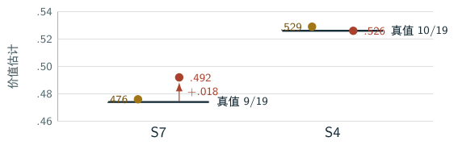
点图，左组为 S7，右组为 S4，纵轴只画 . 46 .46 .46 . 54 .54 .54 （1 / N 1/N 1/ N 红色点是 TD(0)（α = . 05 \alpha=.05 α = .05 黑色横线是真值 9 / 19 9/19 9/19 10 / 19 10/19 10/19 . 018 .018 .018
固定策略在 S7、S4 都向上，经过的非终止状态只有 S 7 \mathrm{S7} S7 S 4 \mathrm{S4} S4 V ( S 7 ) = . 476 V(\mathrm{S7})=.476 V ( S7 ) = .476 V ( S 4 ) = . 529 V(\mathrm{S4})=.529 V ( S4 ) = .529 9 / 19 ≈ . 474 9/19\approx.474 9/19 ≈ .474 10 / 19 ≈ . 526 10/19\approx.526 10/19 ≈ .526 . 003 .003 .003 . 492 .492 .492 . 526 .526 .526 . 018 .018 .018 . 9 .9 .9
选读：学习曲线
同为常步长 . 05 .05 .05 1 / N 1/N 1/ N 下图三条曲线来自同一次运行、同一批回合，只差方法与步长。
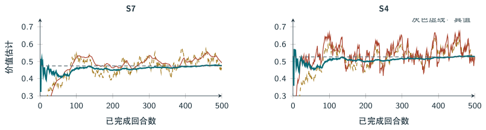
左右两图分别是 S7 与 S4 的回合末估计，横轴是已完成回合数，灰色虚线是真值。青色粗线是首访 MC（步长 1 / N 1/N 1/ N . 05 .05 .05 . 05 .05 .05 1 / N 1/N 1/ N
先看两条常步长曲线。后 250 回合里，S4 上常步长 MC 在约 . 44 .44 .44 . 65 .65 .65 . 43 .43 .43 . 67 .67 .67 1 / N ( s ) 1/N(s) 1/ N ( s ) 1 / N 1/N 1/ N . 05 .05 .05
步长与均方根误差课件
同为步长 . 05 .05 .05 1 / N 1/N 1/ N
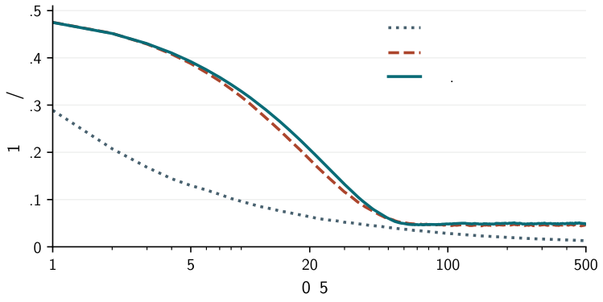
2000 次独立运行的均方根误差，横轴为已完成回合数（对数刻度）。三条曲线是首访 MC（1 / N 1/N 1/ N 首访 MC（α = . 05 \alpha=.05 α = .05 与一步 TD（α = . 05 \alpha=.05 α = .05 三种更新共用每次运行的同一批 500 个回合。
每次运行生成 500 个回合，供三种更新共用，估计都从零开始，共做 2000 次独立运行。两种首访 MC 只改变步长；一步 TD 每条转移更新一次。第 500 回合结束时，先对 2000 次运行和 S7、S4 两个状态的价值误差取平方平均，再开方，称为均方根误差 （root-mean-square error，RMSE）。
第 500 回合
RMSE
首访 MC，1 / N 1/N 1/ N
. 0129 .0129 .0129
首访 MC，α = . 05 \alpha=.05 α = .05
. 0451 .0451 .0451
一步 TD，α = . 05 \alpha=.05 α = .05
. 0481 .0481 .0481
各值的标准误不超过 . 0007 .0007 .0007 . 003 .003 .003 . 0006 .0006 .0006 1 / N 1/N 1/ N . 032 .032 .032 . 05 .05 .05 . 0034 .0034 .0034 . 004 .004 .004 （. 042 .042 .042 对 . 045 .045 .045 . 185 .185 .185 . 206 .206 .206 . 060 .060 .060 Silver，第 4 讲，第 20 页 。复算程序
左图是一次运行的回合末估计，灰色虚线是真值；青色粗线是首访 MC（步长 1 / N 1/N 1/ N α \alpha α α \alpha α δ t = R t + 1 + γ V ( S t + 1 ) − V ( S t ) \delta_t=R_{t+1}+\gamma V(S_{t+1})-V(S_t) δ t = R t + 1 + γV ( S t + 1 ) − V ( S t ) G t G_t G t α = . 05 \alpha=.05 α = .05 α \alpha α α = . 05 \alpha=.05 α = .05
步长的取舍课件
常步长越大，误差缩得越快，残余波动也越大。 上面两条常步长曲线后期停在 . 045 .045 .045 . 048 .048 .048 1 / N 1/N 1/ N α \alpha α 1 − . 19 α 1-.19\alpha 1 − .19 α ln 2 / [ − ln ( 1 − . 19 α ) ] \ln 2/[-\ln(1-.19\alpha)] ln 2/ [ − ln ( 1 − .19 α )] α = . 01 \alpha=.01 α = .01 364.5 364.5 364.5 α = . 05 \alpha=.05 α = .05 72.6 72.6 72.6 α \alpha α 1 − . 1 α 1-.1\alpha 1 − .1 α 1 − α 1-\alpha 1 − α α \alpha α α = . 01 \alpha=.01 α = .01 . 026 .026 .026 α = . 05 \alpha=.05 α = .05 . 058 .058 .058 α \sqrt\alpha α 2.2 2.2 2.2 α n = 1 / n \alpha_n=1/n α n = 1/ n n n n λ \lambda λ
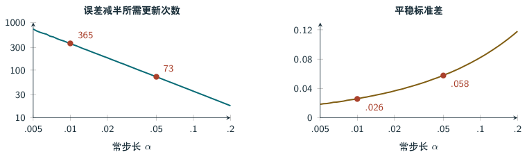
泥地 S4 上常步长 α \alpha α α \alpha α α \alpha α α \alpha α α = . 01 \alpha=.01 α = .01 . 05 .05 .05
已经解决的。 平稳问题中，步长满足 ∑ n α n = ∞ \sum_n\alpha_n=\infty ∑ n α n = ∞ ∑ n α n 2 < ∞ \sum_n\alpha_n^2<\infty ∑ n α n 2 < ∞
已有工作。 一条路线是用梯度调节步长本身。Sutton (1992) 的 IDBD 在线性监督学习中为每个输入维度各学一个步长。Mahmood、Sutton、Degris 与 Pilarski (2012) 的 Autostep 加入归一化，减少对元步长的敏感。Dabney 与 Barto (2012) 为在线 TD 学习给出自适应步长，用步长的上界防止一次更新越过目标。Kearney、Veeriah、Travnik、Sutton 与 Pilarski (2018) 的 TIDBD 把 IDBD 推广到 TD 学习。这些方法大都在线性预测上检验，结果依赖输入尺度与元参数。
没有解决好的。 非平稳或持续学习时，还没有不需调参、又有收敛保证的步长。递减步长要求问题平稳；环境一变，已经缩小的步长跟不上。常步长能跟上，但要事先知道变化有多快。TD 的目标读当前估计，误差信号本身随学习移动；按误差梯度调步长时，梯度中有一部分来自目标的漂移，已有的元学习方法对这种情形没有收敛保证。
怎样检验。 在泥地上每隔固定回合数切换一次打滑概率，真值随之跳变。比较常步长网格、1 / N 1/N 1/ N
TD 的长处与条件课件
哪种方法占优，取决于回合长短、后继估计的好坏与状态是否马尔可夫。 本节在泥地上取步长 . 05 .05 .05 （. 045 .045 .045 对 . 048 .048 .048
TD 与 MC 各在何处占优。行是状态是否满足马尔可夫性质，列是回合长短；泥地从 S7 出发平均 11 步才到终点，属右列。状态马尔可夫时两列都偏向 TD；状态不马尔可夫且回合短时 MC 更稳；右下格两难，第 7 章的多步目标介于两者之间。
第一是回合长短。MC 的目标是完整回报，必须等回合结束；在泥地上从 S7 出发平均要走 11 步，持续任务则永远等不到终点，而 TD 每走一步就有一个目标。第二是后继估计 的好坏。V ( S 4 ) = . 5 V(\mathrm{S4})=.5 V ( S4 ) = .5 . 0272 .0272 .0272 . 0920 .0920 .0920 V ( S 4 ) = 3 V(\mathrm{S4})=3 V ( S4 ) = 3 . 1 + . 81 × 3 = 2.53 .1+.81\times3=2.53 .1 + .81 × 3 = 2.53 . 526 .526 .526 马尔可夫 性。TD 借用后继估计，前提是到达后继状态之后的规律与怎样到达的无关。满足这一条、数据又有限时，TD 让到达同一状态的各段经验共用这个状态的估计，数据固定时的差别见 5.5 节。不满足时，TD 借用的后继估计混合了不同来路，而 MC 只用实际得到的奖励。Sutton 与 Barto 第 5 章小结指出，MC 在这种情况下受损较小。图中右下格两条都不利，第 7 章的多步目标在一步与整回合之间取中，可以按任务调节。
已经解决的。 表格情形下，步长满足两个求和条件、每个可达状态被无限次更新时，TD(0) 以概率 1 收敛到 v π v_\pi v π v π v_\pi v π
已有工作。 Singh 与 Sutton (1996) 在无折扣吸收链上算出首访与每次访问 MC 的偏差、方差与均方误差，5.1 节的自环例子取自那里。Kearns 与 Singh (2000) 在分阶段更新的设定下给出 TD 类更新的误差上界，界中偏差项与方差项分开写出，可用来比较不同的 λ \lambda λ
没有解决好的。 有限样本下没有一般的排序。TD 的误差含后继估计的偏差，这一偏差沿状态链传播，大小取决于初值、步长与更新次序。MC 的误差来自回报方差，随回合长度累积。两者的大小由任务决定，不由方法本身决定；5.4 节在泥地上取 α = . 05 \alpha=.05 α = .05
怎样检验。 在泥地上操控四个量：回合数 K K K α \alpha α V 0 V_0 V 0 （1 / N 1/N 1/ N 与常步长）和 TD(0)，测量单位是第 K K K
5.5 批量 MC 与批量 TD课件
5.4 节每条经验只用一次：泥地 500 回合后，步长 . 05 .05 .05 . 045 .045 .045 . 048 .048 .048 批量更新把一批数据固定，反复扫过，直到价值表不再改变。 数据固定后不再采样；每一遍都用同一张旧表为每个增量算出数值，加起来一次写入表中；然后重复，直到所有增量之和为零。
批量更新的循环，从左往右读。记录固定后不再采新数据；每一轮都用同一张旧表算出每次访问的增量，加总后一次写入；回到中间一格重复，直到增量之和为零、表不再变。批量 MC 与批量 TD 只在增量用哪种目标上不同。
批量首访 MC 在每个回合里只取状态首次出现处的增量，即回报 − - − 批量 TD 对每条转移取增量，即奖励 + γ × +\gamma\times + γ × − - − . 903 .903 .903
批量更新与把样本依次按常步长更新若干遍不同：前者一轮中使用同一张旧表，后者每个样本看到的表可能不同。本课的实现按前者定义，并用经验线性方程独立核对不动点。
一条记录的批量解课件
这条记录上批量首访 MC 得 . 81 .81 .81 5 / 6 5/6 5/6 回到泥地的四步记录。从首次到达 S4 起，记录中依次有两次打滑、一次成功，S4 被访问三次，三次的回报是 . 81 , . 9 , 1 .81,.9,1 .81 , .9 , 1 V MC ( S 4 ) = . 9 2 = . 81 V_{\text{MC}}(\mathrm{S4})=.9^2=.81 V MC ( S4 ) = . 9 2 = .81 ( . 81 + . 9 + 1 ) / 3 ≈ . 903 (.81+.9+1)/3\approx.903 ( .81 + .9 + 1 ) /3 ≈ .903
V = 2 3 ( . 9 V ) ⏟ 两次打滑 + 1 3 ( 1 ) ⏟ 一次成功 , V=\underbrace{\tfrac23(.9V)}_{\text{两次打滑}}+\underbrace{\tfrac13(1)}_{\text{一次成功}}, V = 两次打滑 3 2 ( .9 V ) + 一次成功 3 1 ( 1 ) ,
故 V ( S 4 ) = 5 / 6 V(\mathrm{S4})=5/6 V ( S4 ) = 5/6 V ( S 7 ) = . 75 V(\mathrm{S7})=.75 V ( S7 ) = .75
批量 MC 的解是训练回报的平均，它让训练集上的回报平方误差最小。批量 TD 的解是把数出的频率（S4 成功 1 次/3 次）当作真模型求出的价值，称为确定性等价估计 （certainty-equivalence estimate）。“确定性等价”指把估出的模型当成确定无误来用；本节后面的 A–B 例子沿用这个名称。TD 把三次访问当作同一状态的转移样本，把共同的后继估值代回每次打滑，因此也用上了较晚访问的经验。真实成功概率为 . 1 .1 .1 . 526 .526 .526 （. 81 .81 .81 对 . 833 .833 .833 1 / 3 1/3 1/3 . 1 .1 .1
这条记录是不是例外，要看许多组数据上的平均。每组取 K K K K K K K = 1 K=1 K = 1 . 288 .288 .288 . 238 .238 .238 K = 100 K=100 K = 100 . 029 .029 .029 . 025 .025 .025 K K K K = 1 K=1 K = 1 1 1 1 L L L K = 1 K=1 K = 1 . 9 L − 1 .9^{L-1} . 9 L − 1 1 / ( . 1 L + . 9 ) 1/(.1L+.9) 1/ ( .1 L + .9 ) L = 3 L=3 L = 3 . 81 .81 .81 . 833 .833 .833 L = 30 L=30 L = 30 . 047 .047 .047 . 256 .256 .256 K K K
左图是当前记录上的批量扫描，横轴是扫描遍数，纵轴是 V ( S 4 ) V(\mathrm{S4}) V ( S4 ) 10 / 19 10/19 10/19 K / ( K + . 1 S ) K/(K+.1S) K / ( K + .1 S ) S S S . 81 .81 .81 5 / 6 5/6 5/6 K K K K = 1 K=1 K = 1 . 288 .288 .288 . 238 .238 .238 K K K . 029 .029 .029 . 025 .025 .025
前面评价同一策略，固定数据仍能用来比较两种预测规则。若还要根据这份记录挑选动作，记录里只出现过向上，其余动作的后果没有观测。第 12 章 12.1 节用这个区别说明离线控制的覆盖要求。固定数据控制
选读：A–B 八回合数据
八回合数据中 A 只出现一次，B 出现八次。 泥地只有一条记录，这里换 Sutton 与 Barto 例 6.4 这个更小的例子，把两种批量解的差别放大。设 γ = 1 \gamma=1 γ = 1
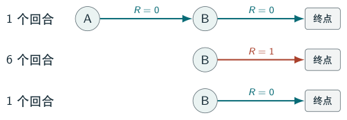
八个回合分三行列出。第一行是 1 个回合：A 经奖励 0 到 B，再经奖励 0 到终点。第二行是 6 个相同回合：从 B 经奖励 1（红色）到终点。第三行是 1 个回合：从 B 经奖励 0 到终点。A 只出现一次，B 出现八次。
这组数据按原书例 6.4 重绘，不来自泥地实验。B 的样本均值为 V ( B ) = 6 / 8 = . 75 V(B)=6/8=.75 V ( B ) = 6/8 = .75 0 0 0 Silver，第 4 讲，AB Example
选读：A 的两个估计
批量 MC 给 A 估 0 0 0 . 75 .75 .75 固定八回合数据、γ = 1 \gamma=1 γ = 1
0 = 0 − V ( A ) , A 的一个回报 , 0 = 6 − 8 V ( B ) , B 的八个回报 , V MC ( A ) = 0 , V MC ( B ) = . 75. \begin{aligned}
0&=0-V(A),&&\text{A 的一个回报},\\
0&=6-8V(B),&&\text{B 的八个回报},
\end{aligned}\qquad V_{\text{MC}}(A)=0,\quad V_{\text{MC}}(B)=.75. 0 0 = 0 − V ( A ) , = 6 − 8 V ( B ) , A 的一个回报 , B 的八个回报 , V MC ( A ) = 0 , V MC ( B ) = .75.
批量 TD 用每条转移的奖励与尾值：
0 = V ( B ) − V ( A ) , A → B , 0 = 6 − 8 V ( B ) , B → 终止 , V TD ( A ) = V TD ( B ) = . 75. \begin{aligned}
0&=V(B)-V(A),&&A\to B,\\
0&=6-8V(B),&&B\to\text{终止},
\end{aligned}\qquad V_{\text{TD}}(A)=V_{\text{TD}}(B)=.75. 0 0 = V ( B ) − V ( A ) , = 6 − 8 V ( B ) , A → B , B → 终止 , V TD ( A ) = V TD ( B ) = .75.
两组方程只在 A 一行不同。
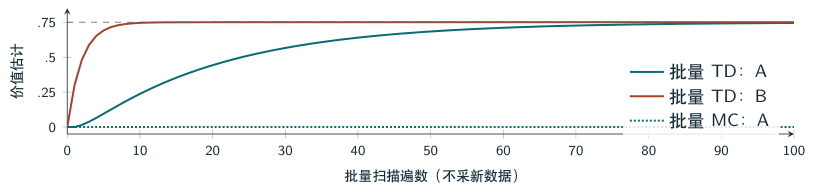
横轴是批量扫描遍数（不采新数据），纵轴是价值估计。红线是批量 TD 的 V ( B ) V(B) V ( B ) . 75 .75 .75 V ( A ) V(A) V ( A ) . 75 .75 .75 V ( A ) V(A) V ( A ) 0 0 0 . 05 .05 .05 V k ( B ) = . 75 ( 1 − . 6 k ) V_k(B)=.75(1-.6^k) V k ( B ) = .75 ( 1 − . 6 k ) . 05 .05 .05 V k ( A ) = . 75 + . 107 × . 6 k − . 857 × . 9 5 k V_k(A)=.75+.107\times.6^k-.857\times.95^k V k ( A ) = .75 + .107 × . 6 k − .857 × .9 5 k . 05 .05 .05
批量 TD 的解是前面定义的确定性等价估计：按记录频率，A 以概率 1 1 1 6 / 8 6/8 6/8 1 1 1 . 75 .75 .75 V ( A ) = 0 V(A)=0 V ( A ) = 0 . 75 .75 .75 . 5625 .5625 .5625 V ( B ) V(B) V ( B ) n n n n 2 n^2 n 2 n 3 n^3 n 3 O ( n ) O(n) O ( n )
这一步依赖马尔可夫性质：到达 B 后，未来的规律不依赖此前怎样到达 B。若 B 实际混合了不同历史、不同后续结果，这种共享也会混合不相容的预测。后面的智能体状态与函数近似章节会重新讨论这一条件。
随机游走批量实验课件
随机游走上，批量 TD(0) 对新数据的预测误差低于批量 MC。 泥地上已经看到，平均到许多组数据，批量 TD 的误差比批量首访 MC 小。这里看另一个任务上的证据：Sutton (1988) 的有界随机游走。设定：有界随机游走有五个非终止状态，从中间出发，每步等概率向左或向右，右端结束记 1、左端记 0；每个状态用单位向量表示，等价于表格。实验生成 100 个训练集，每集 10 条序列；每集反复呈现，整集的权重改变量累积后才写入，直到权重不再变化。测量：收敛后的预测与理想预测 1 / 6 , 2 / 6 , … , 5 / 6 1/6,2/6,\ldots,5/6 1/6 , 2/6 , … , 5/6 λ = 0 \lambda=0 λ = 0 . 19 .19 .19 λ = 1 \lambda=1 λ = 1 . 25 .25 .25 Sutton 1988，勘误版 · Machine Learning 3, 9–44 · 投影片上的证据页
不同意见 这项结果以数据确由马尔可夫过程产生为前提。若状态不满足马尔可夫性，到达同一状态后的规律随来路而变，确定性等价所假设的模型就错了。这时只拟合实际回报的批量 MC 可能更准。Sutton 与 Barto 第 5 章小结也指出，MC 在违反马尔可夫性时受损较小。
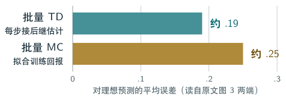
两根横条是收敛后的预测对理想预测的平均误差，越短越好；数值读自勘误版图 3 的两端（λ = 0 \lambda=0 λ = 0 与 λ = 1 \lambda=1 λ = 1 . 19 .19 .19 . 25 .25 .25
本章在转移与奖励分布 p p p π \pi π v π v_\pi v π V ( S t ) ← V ( S t ) + α [ Y t − V ( S t ) ] V(S_t)\gets V(S_t)+\alpha[Y_t-V(S_t)] V ( S t ) ← V ( S t ) + α [ Y t − V ( S t )] Y t Y_t Y t G t G_t G t R t + 1 + γ V ( S t + 1 ) R_{t+1}+\gamma V(S_{t+1}) R t + 1 + γV ( S t + 1 ) v π v_\pi v π ( T π V ) ( S t ) (T_\pi V)(S_t) ( T π V ) ( S t ) v π v_\pi v π （. 0272 .0272 .0272 对 . 0920 .0920 .0920
首访 MC 的样本平均是 v π ( s ) v_\pi(s) v π ( s ) 1 / N ( s ) 1/N(s) 1/ N ( s )
TD 误差 δ t \delta_t δ t 0 0 0 V V V
固定 V ( S 4 ) = . 5 V(\mathrm{S4})=.5 V ( S4 ) = .5 . 526 .526 .526 . 0920 .0920 .0920 . 505 .505 .505 . 0272 .0272 .0272 γ E [ V ( S t + 1 ) − v π ( S t + 1 ) ∣ S t ] ≈ − . 021 \gamma\,\mathbb E[V(S_{t+1})-v_\pi(S_{t+1})\mid S_t]\approx-.021 γ E [ V ( S t + 1 ) − v π ( S t + 1 ) ∣ S t ] ≈ − .021
表格 TD(0) 的平均更新以 Bellman 方程的解为不动点；递减步长满足两个求和条件时概率 1 收敛，常步长只在均值意义下收敛（5.3 节）。
有限样本下谁更准还取决于步长：α = . 05 \alpha=.05 α = .05 1 / N 1/N 1/ N
反复使用同一批数据时，批量 MC 拟合训练回报，批量 TD 解经验模型的 Bellman 方程（确定性等价）；在泥地与随机游走两个马尔可夫任务上，后者对新数据平均更准（5.5 节）。
DP、TD、MC 可以放在是否采样、是否自举两条轴上比较（见下文“更新的宽度与深度”）；本章只评价固定策略，第 6 章 6.1 节起转向控制。
本章的数
S4 处 TD 偏差 − . 021 -.021 − .021 泥地 S4，γ = . 9 \gamma=.9 γ = .9 v π = 10 / 19 ≈ . 526 v_\pi=10/19\approx.526 v π = 10/19 ≈ .526 V ( S 4 ) = . 5 V(\mathrm{S4})=.5 V ( S4 ) = .5
量
MC
TD
结论与成立条件
目标均值（5.3 节）
. 526 .526 .526 . 505 .505 .505 MC 无偏；TD 的偏差来自后继估计误差
目标方差（5.3 节）
. 0920 .0920 .0920 . 0272 .0272 .0272 后继估计接近真值时 TD 较小；V ( S 4 ) = 3 V(\mathrm{S4})=3 V ( S4 ) = 3 . 2601 .2601 .2601
第 500 回合 RMSE，α = . 05 \alpha=.05 α = .05
. 045 .045 .045 . 048 .048 .048 2000 次运行，差 . 003 .003 .003 1 / N 1/N 1/ N . 013 .013 .013
一条记录反复使用（5.5 节）
. 81 .81 .81 5 / 6 5/6 5/6 MC 拟合训练回报，TD 解经验模型；都远离 . 526 .526 .526
随机游走批量误差（5.5 节）
. 25 .25 .25 . 19 .19 .19 马尔可夫数据上，批量 TD 对新数据更准
三种更新都评价一个给定的 π \pi π v π ( s ) v_\pi(s) v π ( s ) q ( s , a ) q(s,a) q ( s , a )
同一目标在后续各章的形式。 TD 目标 R t + 1 + γ V ( S t + 1 ) R_{t+1}+\gamma V(S_{t+1}) R t + 1 + γV ( S t + 1 ) q V q_V q V 第 6 章 把它移到动作价值上，Sarsa 取实际下一动作（6.2 节），Q-learning 取 max \max max 第 7 章 把一步推到 n n n λ \lambda λ 第 8 章 用学到的模型产生后果（8.1、8.2 节）；第 9 章 用函数近似代替表，半梯度 TD 的目标形式不变（9.1 节）。
本章仍需要的前提。 只评价一个固定的 π \pi π
更新的宽度与深度课件
DP、TD 与 MC 是更新宽度与深度两条轴上的三个角。 回到泥地 S4 的同一次访问，旧值都是 . 5 .5 .5 . 505 .505 .505 . 45 .45 .45 . 81 .81 .81 v π v_\pi v π 是否采样 和是否自举 是两个不同选择。三者的目标与更新时机也不同：DP 的目标是 ( T π V ) ( s ) (T_\pi V)(s) ( T π V ) ( s ) R t + 1 + γ V ( S t + 1 ) R_{t+1}+\gamma V(S_{t+1}) R t + 1 + γV ( S t + 1 ) G t G_t G t
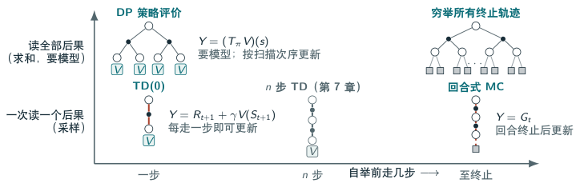
表格方法的两条轴。纵轴是一次更新读多少后果：上排按模型读全部后果，下排一次只读一个抽样后果。横轴是自举前走几步：左端一步，右端走到终止。空心圆是状态，实心点是动作，方框是终止，V V V ( T π V ) ( s ) (T_\pi V)(s) ( T π V ) ( s ) R t + 1 + γ V ( S t + 1 ) R_{t+1}+\gamma V(S_{t+1}) R t + 1 + γV ( S t + 1 ) G t G_t G t n n n
沿横轴向右，自举推迟，目标包含更多实际奖励。沿纵轴向上，更多可能后果按概率进入一次更新。左列的 DP 和一步 TD 共用后继估计，固定旧表后，前者算出的就是后者的条件均值。右下角的回合式 MC 等到终止，目标的期望直接等于 v π v_\pi v π n n n n n n λ \lambda λ Sutton 与 Barto 第一版 §10.1 的图 10.1 重绘；Silver 第 4 讲也有同类的图（原图 ）。
蒙特卡洛与 TD 预测固定策略的长期结果，图中各方法的根都在评价给定策略。控制还需要比较不同首动作的价值，并在探索中改进策略；数据由动作选择产生，因此须区分行为策略与目标策略，这是 第 6 章的控制问题 。若仍然评价同一策略，可以在一步和整回合之间选择自举的时刻，这是 第 7 章的多步预测 。
四种方法的目标课件
旧表固定时，S4 处 MC 目标均值 . 526 .526 .526 . 505 .505 .505 . 45 .45 .45 . 505 .505 .505 各方法都执行 V ( S t ) ← V ( S t ) + α [ Y t − V ( S t ) ] V(S_t)\gets V(S_t)+\alpha[Y_t-V(S_t)] V ( S t ) ← V ( S t ) + α [ Y t − V ( S t )] α = 1 \alpha=1 α = 1 v π = 10 / 19 ≈ . 526 v_\pi=10/19\approx.526 v π = 10/19 ≈ .526 V ( S 4 ) = . 5 V(\mathrm{S4})=.5 V ( S4 ) = .5
方法
目标 Y t Y_t Y t
S4 的一次目标
条件均值，方差（V V V 固定）
DP 评价
( T π V ) ( S t ) (T_\pi V)(S_t) ( T π V ) ( S t ) . 505 .505 .505 . 505 .505 .505 0 0 0
首访 MC
首访后的 G t G_t G t
. 9 k .9^k . 9 k k k k . 526 .526 .526 . 0920 .0920 .0920
每次访问 MC
每次访问后的 G t G_t G t
同上，同一回合的各回报相关
同上；整体估计在有限样本下有偏
TD(0)
R t + 1 + γ V ( S t + 1 ) R_{t+1}+\gamma V(S_{t+1}) R t + 1 + γV ( S t + 1 ) . 45 .45 .45 . 505 .505 .505 . 0272 .0272 .0272
DP 的目标是一个确定的数 . 505 .505 .505 . 9 × . 5 = . 45 .9\times.5=.45 .9 × .5 = .45 . 9 .9 .9 . 1 .1 .1 . 505 .505 .505 γ E [ V ( S t + 1 ) − v π ( S t + 1 ) ∣ S t ] \gamma\,\mathbb E[V(S_{t+1})-v_\pi(S_{t+1})\mid S_t] γ E [ V ( S t + 1 ) − v π ( S t + 1 ) ∣ S t ] . 81 ( . 5 − 10 / 19 ) ≈ − . 021 .81(.5-10/19)\approx-.021 .81 ( .5 − 10/19 ) ≈ − .021 α = 1 \alpha=1 α = 1 T π V T_\pi V T π V v π v_\pi v π
主表给的是旧表固定时一次目标的条件均值。数据固定、反复使用直到估计不再变化时，各方法停在另一组值上。下表取 5.5 节那一条四步记录：
方法
固定数据上的解
首访 MC
. 81 .81 .81
每次访问 MC
. 903 .903 .903
批量 TD
5 / 6 5/6 5/6
首访 MC 只有一个回报 . 81 .81 .81 . 81 .81 .81 . 9 .9 .9 . 903 .903 .903 5 / 6 5/6 5/6 . 526 .526 .526
本章除 DP 外，数据都由被评价的策略 π \pi π
补充阅读：贯穿全课的两对张力课件
自举用偏差换方差；改用别的策略产生的数据时，加权修正去掉偏差，却放大方差。 本章讨论的自举早晚与步长大小只涉及表格预测。放到全课看，另有两对张力反复出现，后面各章的许多方法都在两端之间调节。以下数值取冰面任务，γ = . 9 \gamma=.9 γ = .9 . 5 .5 .5 v π ( s ) = 2.3 v_\pi(s)=2.3 v π ( s ) = 2.3
偏差与方差。 完整回报 G t G_t G t v π ( S t ) v_\pi(S_t) v π ( S t ) R t + 1 + γ V ( S t + 1 ) R_{t+1}+\gamma V(S_{t+1}) R t + 1 + γV ( S t + 1 ) V ≠ v π V\ne v_\pi V = v π p = . 5 p=.5 p = .5 V ( u ) = 3 V(u)=3 V ( u ) = 3 R 1 + γ V ( S 1 ) R_1+\gamma V(S_1) R 1 + γV ( S 1 ) . 7225 .7225 .7225 − . 45 -.45 − .45 n n n λ \lambda λ
稳定与样本效率。 同策略更新只用当前策略产生的数据，分布与目标一致，较稳定，但策略一变，旧数据就作废。离策略方法复用旧数据，节省交互，但数据分布与目标策略不同，需要校正或要求覆盖。本章要求经验由被评价的策略产生，这属于同策略一端。冰面任务中，用 b ( R ∣ s ) = . 5 b(R\mid s)=.5 b ( R ∣ s ) = .5 π ( R ∣ s ) = . 8 \pi(R\mid s)=.8 π ( R ∣ s ) = .8 ρ = π ( A 0 ∣ s ) / b ( A 0 ∣ s ) \rho=\pi(A_0\mid s)/b(A_0\mid s) ρ = π ( A 0 ∣ s ) / b ( A 0 ∣ s ) ρ = . 8 / . 5 = 1.6 \rho=.8/.5=1.6 ρ = .8/.5 = 1.6 ρ = . 2 / . 5 = . 4 \rho=.2/.5=.4 ρ = .2/.5 = .4 . 5 × . 4 × 1 + . 5 × 1.6 × 3.6 = 3.08 .5\times.4\times1+.5\times1.6\times3.6=3.08 .5 × .4 × 1 + .5 × 1.6 × 3.6 = 3.08 1.6 × 3.6 = 5.76 1.6\times3.6=5.76 1.6 × 3.6 = 5.76 . 4 × 1 = . 4 .4\times1=.4 .4 × 1 = .4 2.6 8 2 ≈ 7.18 2.68^2\approx7.18 2.6 8 2 ≈ 7.18
延伸阅读
Sutton 与 Barto，Reinforcement Learning: An Introduction ，第 2 版，§5.1 与 §§6.1–6.3（含例 6.4）。首访与每次访问 MC、TD(0)、批量更新与 A–B 例子的标准讲法，本章的式子与记号以它为准。
R. S. Sutton (1988), Learning to predict by the methods of temporal differences, Machine Learning 3, 9–44。TD 方法的原始论文，5.5 节引用的有界随机游走实验见其图 3（宜读勘误版）。
S. P. Singh 与 R. S. Sutton (1996), Reinforcement learning with replacing eligibility traces , Machine Learning 22。§§3.4–3.5 在无折扣吸收链上给出首访与每次访问 MC 的偏差、方差与均方误差的定理（定理 6、7、10），§2.3 是自环例子；文中并把两者与替换迹、累积迹对应起来。
表格 TD 的收敛证明：P. Dayan (1992), The convergence of TD(λ) for general λ, Machine Learning 8；T. Jaakkola、M. I. Jordan 与 S. P. Singh (1994), On the convergence of stochastic iterative dynamic programming algorithms, Neural Computation 6；J. N. Tsitsiklis (1994), Asynchronous stochastic approximation and Q-learning, Machine Learning 16。读它们可以看到 5.3 节步长条件在随机逼近框架下的完整论证。
M. Kearns 与 S. Singh (2000), Bias-variance error bounds for temporal difference updates, COLT。在分阶段更新的设定下给出 TD 类更新的误差上界，偏差项与方差项分开；它给出量级，不给出具体任务上 MC 与 TD 的次序。
R. S. Sutton (1992), Adapting bias by gradient descent: An incremental version of delta-bar-delta, AAAI。IDBD：在线性监督学习中为每个输入维度学一个步长；TD 目标随学习移动的情形不在其分析内。
A. R. Mahmood、R. S. Sutton、T. Degris 与 P. M. Pilarski (2012), Tuning-free step-size adaptation, ICASSP。Autostep：在 IDBD 上加归一化，降低对元步长的敏感；检验限于线性监督预测。
W. Dabney 与 A. G. Barto (2012), Adaptive step-size for online temporal difference learning, AAAI。用步长上界防止 TD 更新越过目标；非平稳时的跟踪性能仍需调参。
A. Kearney、V. Veeriah、J. B. Travnik、R. S. Sutton 与 P. M. Pilarski (2018), TIDBD: Adapting temporal-difference step-sizes through stochastic meta-descent, arXiv:1804.03334。把 IDBD 推广到 TD 学习；收敛保证仍缺。
David Silver，Reinforcement Learning ，Lecture 4：Model-Free Prediction。本章小结两轴图的同类图见这一讲，其中还有随机游走上的常步长对照。
F. Pardo、A. Tavakoli、V. Levdik 与 P. Kormushev (2018), Time limits in reinforcement learning, ICML。区分真正终止与时间截断，说明截断处为什么仍要自举，对应 5.2 节的“终止与截断”。
G. Tesauro (1995), Temporal difference learning and TD-Gammon , Communications of the ACM 38(3)。TD 在双陆棋自对弈上的早期大规模应用，5.2 节的背景页取自这篇文章。
Machado，CMPUT 365（2026 冬），蒙特卡洛方法一讲 （对应 Sutton 与 Barto 第 5 章）与时序差分学习一讲 （TD(0)）：本章两类方法的另一种课堂讲法。
练习
泥地，γ = . 9 \gamma=.9 γ = .9 π 0 \pi_0 π 0 S 7 → 0 S 4 → 0 S 4 → 0 S 4 → 1 G \mathrm{S7}\xrightarrow{0}\mathrm{S4}\xrightarrow{0}\mathrm{S4}\xrightarrow{0}\mathrm{S4}\xrightarrow{1}G S7 0 S4 0 S4 0 S4 1 G
首访 MC 从这一回合给 S7、S4 各取哪个样本？每次访问 MC 给 S4 取哪些？答要点： S7 取 G 0 = . 729 G_0=.729 G 0 = .729 G 1 = . 81 G_1=.81 G 1 = .81 . 81 , . 9 , 1 .81,.9,1 .81 , .9 , 1
初表 V ( S 7 ) = . 4 V(\mathrm{S7})=.4 V ( S7 ) = .4 V ( S 4 ) = . 5 V(\mathrm{S4})=.5 V ( S4 ) = .5 α = . 2 \alpha=.2 α = .2 Y 1 , δ 1 Y_1,\delta_1 Y 1 , δ 1 答要点： Y 1 = 0 + . 9 ( . 5 ) = . 45 Y_1=0+.9(.5)=.45 Y 1 = 0 + .9 ( .5 ) = .45 δ 1 = − . 05 \delta_1=-.05 δ 1 = − .05 V ( S 4 ) ← . 49 V(\mathrm{S4})\gets.49 V ( S4 ) ← .49
固定 V ( S 4 ) = . 5 V(\mathrm{S4})=.5 V ( S4 ) = .5 v π ( S 4 ) = 10 / 19 v_\pi(\mathrm{S4})=10/19 v π ( S4 ) = 10/19 答要点： . 9 ( . 45 ) + . 1 ( 1 ) = . 505 .9(.45)+.1(1)=.505 .9 ( .45 ) + .1 ( 1 ) = .505 γ E [ V ( S t + 1 ) − v π ( S t + 1 ) ∣ S t ] = . 81 ( . 5 − 10 / 19 ) ≈ − . 0213 \gamma\mathbb E[V(S_{t+1})-v_\pi(S_{t+1})\mid S_t]=.81(.5-10/19)\approx-.0213 γ E [ V ( S t + 1 ) − v π ( S t + 1 ) ∣ S t ] = .81 ( .5 − 10/19 ) ≈ − .0213
为什么 δ t \delta_t δ t v π ( S t ) − V ( S t ) v_\pi(S_t)-V(S_t) v π ( S t ) − V ( S t ) 答要点： 记 F t \mathcal F_t F t t t t S t S_t S t V V V E [ δ t ∣ F t ] = ( T π V ) ( S t ) − V ( S t ) \mathbb E[\delta_t\mid\mathcal F_t]=(T_\pi V)(S_t)-V(S_t) E [ δ t ∣ F t ] = ( T π V ) ( S t ) − V ( S t )
常步长 α = . 05 \alpha=.05 α = .05 10 / 19 10/19 10/19 答要点： ∑ α 2 = ∞ \sum\alpha^2=\infty ∑ α 2 = ∞ 1 − . 19 α 1-.19\alpha 1 − .19 α . 058 .058 .058
只反复使用这一回合，批量 TD 与首访 MC 对 S4 各收敛到什么？为什么不同？答要点： TD 解 V = 2 3 ( . 9 V ) + 1 3 V=\tfrac23(.9V)+\tfrac13 V = 3 2 ( .9 V ) + 3 1 5 / 6 5/6 5/6 1 / 3 1/3 1/3 . 81 .81 .81
采集器在两步后截断记录（仍在 S4），最后一条转移的 TD 目标尾值取什么？答要点： 取 V ( S 4 ) V(\mathrm{S4}) V ( S4 ) 0 0 0
若 MC 也从 ( V ( S 7 ) , V ( S 4 ) ) = ( . 4 , . 5 ) (V(\mathrm{S7}),V(\mathrm{S4}))=(.4,.5) ( V ( S7 ) , V ( S4 )) = ( .4 , .5 ) α = . 5 \alpha=.5 α = .5 . 5645 , . 655 .5645,.655 .5645 , .655 提示： 把常步长更新展开成历次回报的加权和，比较各回报的权重与 1 / N 1/N 1/ N
在 V ( S 4 ) = . 8 V(\mathrm{S4})=.8 V ( S4 ) = .8 F ( u ) = . 1 − . 19 u F(u)=.1-.19u F ( u ) = .1 − .19 u u = . 8 u=.8 u = .8 10 / 19 10/19 10/19 提示： 打滑时目标为 . 9 V ( S 4 ) .9V(\mathrm{S4}) .9 V ( S4 ) 1 1 1 . 8 .8 .8 10 / 19 10/19 10/19
在 5.5 节的 A–B 八回合数据中加入一次 A 直接得到奖励 1 1 1 V ( A ) V(\mathrm{A}) V ( A ) 提示： MC 只看 A 出发的各条回报；TD 先由 B 的经验求 V ( B ) V(\mathrm{B}) V ( B ) V ( A ) V(\mathrm{A}) V ( A )
复现记录
本章的模拟设定：泥地与给定的向上策略，零初值，每次 500 回合；MC 与 TD 共用同一批轨迹；5.4 节的均方根误差取 2000 次独立运行。保存的记录有三类：
任务参数、解析参照与独立核对结果；
指定四步轨迹上每一步的旧值、目标、误差和更新值；
64 次运行逐回合的 MC 与 TD 价值和真实转移计数。
正文中的数值都可在这些记录中逐项核对。解析参照用几何级数、独立线性方程求解和直接轨迹求和三种方式互相核对；这些分析量不输入 MC 或 TD 学习器。
补充计算：五元组映射、泥地概率树与单步控制图由有限模型直接算出，并检查对应的有限模型恒等式，不涉及训练。